werktitel: strijden om de publieke opinie
De overtuigingskracht van visuele communicatie.
1. Een inleiding: objectiviteit en perceptie.
1.1 Inleiding, Samenvatting.
- Inleiding: Aanleiding tot het onderzoek.
- Samenvatting, vraagstelling.
1.2 Perceptie, definitie
- Defnitie vanuit het woordenboek en de Etymologie
- Definitie vanuit de psychologie.
- Eigen definitie
1.3 het perceptieproces
- Inleiding: de drie onderdelen van het perceptieproces
- Hypothesefase: Selectie
- Informatiefase: Organisatie
- Confirmatiefase: Interpretatie.
2. Invloed op perceptie door psychologische wetmatigheden in de hersenen.
2.1 Perceptie, gebaseerd op aangeleerde denkprocessen.
- Theorie van Hermann von Helmholz: Op leren gebaseerde inferentie.
- Streven naar consistentie. + over coginitieve dissonantie.
- Cognitieve consistente theorieen.
- Context en verwachtingen.
- Perceptuele predispositie.
- Perceptie in de context van cultuur: Ponzo-Illusie en de Muller-Lyner illusie
2.2 Perceptie, gebaseerd op ingebouwde denkprocessen.
- Inleiding: het bestaan van ingebouwde denkprocessen die worden gebruikt bij perceptie
- Gestaltwetten van perceptuele ordening van Max wertheimer: Wet van nabijheid, Wet van gelijkheid, Wet van geslotenheid, Wet van continuering, Wet van gemeenschappelijke bestemming, Voor- en achtergrond, Wet van Pragnanz.
- Perceptie: nurture en nature. (samenvatting, conclusie 1.3 + 1.4)
2.3. Perceptie: bewust en onderbewust
- Het automatische- en bewuste systeem.
- Kahneman: ‘Fast thinking en slow thinking’
- Dijksterhuis over het onbewuste.
2.4 Een grafisch ontwerper als psycholoog: Wat heeft een grafisch ontwerper aan deze kennis?
3. De invloed van semiotiek op perceptie
3.1. Het herkennen en interpreteren van dingen die een betekenis dragen.
3.2. Drie soorten tekens volgens Peirce
- Iconische tekens
- Indexiale tekens
- Symbolische tekens
3.3. Twee manieren om betekenis toe te kennen aan een gewaarwording volgesn Barthes
- Detonatie
- Connotatie
3.4 Een grafisch ontwerper als semioticus: Wat heeft een grafisch ontwerper aan deze kennis?
4. De invloed van retorica op perceptie
4.1 Retoriek, inleiding, definitie.
- Retorica in de ontwerp- en reclamewereld.
-Verzwegen argumenten en standpunten in een overtuigend ontwerp.
4.2 Ethos, pathos en logos.
- Ethos
- Pathos
- Logos
4.3 Soorten argumentaties.
- Argumentatie gebaseerd op een kentekenrelatie
- Argumentatie gebaseerd op een vergelijkingsrelatie
- Argumentatie gebaseerd op een causale relatie
4.4 Stijlfiguren.
- Rijm, verbo-picutraal schema, repetitio, contrast, metafoor, Synecdoche, vergelijking, personificatie, hyperbool, oxymoron.
4.5 Een grafisch ontwerper als visueel redenaar: Wat heeft een grafisch ontwerper aan deze kennis?
5. Vraagstukken m.b.t. objectiviteit en moraal.
5. 1 Inleiding
5.2 Objectiviteit in het ontwerpersvak
- Is het mogelijk om een visuele boodschap op een objectieve manier te verzenden?
- Is het mogelijk om een visuele boodschap op een objectieve manier te ontvangen
5.3 Is het wenselijk om als ontwerper altijd objectief te zijn?
- Debat, Crouwel versus Van Toorn
5.4. Conclusies, slotwoord.
- Eigen visie m.b.t. objectiviteit.
- Subjectiviteit versus verantwoordelijkheid voor de waarheid.
- Opgedane kennis uit deze scriptie in de praktijk.
Literatuurlijst, beeldverantwoording.
1 . inleiding: perceptie en objectiviteit
1.1 Inleiding
Nu het einde van mijn studietijd aan de academie in zicht is, denk ik vaak na over mijn maatschappelijke positie als toekomstig ontwerpster. Hoe ga ik mijn vaardigheden gebruiken? Zijn er nog bepaalde studies of wetenschappelijke inzichten die relevant kunnen zijn in mijn werk?
Bij ontwerpbureaus zijn het uiteindelijk natuurlijk de creatievelingen die de dienst uitmaken. Creatieve mensen lijken zich soms snel bedreigd te voelen door wetenschappelijke inzichten. Toch wil ik zelf graag in deze fase van mijn studie op een theoretische manier onderzoeken hoe wij als ontwerpers gebruik kunnen maken van verschillende inzichten die eigenlijk buiten ons vakgebied vallen. Hierbij zal ik mij richten op het proces van betekenisvorming dat voortkomt uit de interactie tussen medium en kijker.
Het werk dat een grafisch ontwerper maakt, doet een beroep op aangeboren of aangeleerde denkprocessen, zijn vaak metaforisch van aard, zitten argumentatief sterk in elkaar, of bevatten een subliminale boodschap.
Mijn ervaring is dat dit soort metaforische middelen, die een bepaald soort interactie aangaan met het publiek, zeer bruikbaar zijn voor het genereren van discussie. Zij kunnen mensen helpen denken in interessante en onverwachte nieuwe richtingen. Dit denken wordt gestuurd door de middelen die jij als ontwerper in kan zetten, deze middelen kunnen op verschillende manieren geanalyseerd worden.
De psychologie lijkt mij bijvoorbeeld bij uitstek de wetenschappelijke discipline die onderzoek doet naar de effecten die de (visuele) input uit wereld om ons heen hebben op het denken en het handelen van individuele mensen. Hoe filteren we informatie en maken hier onze eigen werkelijkheid van? Vanuit o.a. de semiotiek zal ik onderzoek doen naar de betrouwbaarheid van de interpretaties die we toekennen aan onze waarneming. We hebben alle redenen om te vermoeden dat we allemaal (met enige variatie) de wereld op grofweg dezelfde wijze waarnemen. Maar, omdat we verschillende betekenissen aan onze gewaarwordingen toekennen, is het duidelijk dat de perceptie van de wereld tussen mensen onderling sterk uiteen kan lopen, met mogelijk evenveel verschillen als er mensen zijn. Perceptie kan dus erg uiteen lopen, maar lijkt ook stuurbaar, evenals de overtuigingskracht van visuele middelen, hiervoor kan de visuele retorica ingezet worden.
Met kennis over deze drie onderwerpen op zak, kan een ontwerper wellicht een grotere invloed uitoefenen op (de perceptie van) mensen. Hier komt ook een ethisch aspect bij kijken, want willen we wel mensen beinvloeden? Wanneer spreken we van manipulatie? Kan het werk van ontwerpers eigenlijk wel objectief zijn? Is het mogelijk om op een objectieve manier een visuele boodschap te ontvangen? Bestaat objectiviteit dan eigenlijk wel binnen de visuele commiunicatie?
Het beeld als taal
In deze tijd wordt er veelvuldig gebruik gemaakt van figuren die in een plat vlak getekend zijn, het vermogen van mensen om deze figuren te begrijpen is dan ook zeer groot geworden. Vormgeving is als gevolg hiervan belangrijker geworden dan een paar decennia geleden. Op straat, in winkels, op tv, in kranten en tijdschriften en nog veel meer plekken, worden mensen gevoed met beelden. Zij raken zodanig gewend en comfortabel met deze beelden, dat er sprake is van visueel geletterde burgers. Als je visueel geletterd bent, zou je in staat moeten zijn om het onderwerp van het beeld te benoemen, de betekenis te kunnen begrijpen, de stijl en compositie van het beeld te kunnen analyseren, de esthetische kwaliteit te kunnen evaluaeren, te kunnen benoemen wat het doel is, en wie het publiek is.
Visuele geletterdheid wordt opgehangen aan drie theorieen: de gestalttheorie (die te maken heeft met de psychologie van waarneming), de semiotiek, en de retorica. Deze theorieen zal ik in mijn scriptie behandelen. Hieronder volgt een samenvatting:
Het eerste onderdeel van deze scriptie zal ik wijden aan de psychologische aspecten van het begrip ‘perceptie’. Het lijkt mij namelijk aannemelijk dat een mens met zijn ogen niet zomaar dingen registreert. De ogen zijn onderdeel van het brein, dat de binnenkomende informatie voortdurend bewerkt, interpreteert en corrigeert als er iets niet lijkt te kloppen. Deze processen behoren tot de perceptie en hebben te maken met aangeboren eigenschappen en met aangeleerde concepten in het brein van de mens.
Het tweede onderdeel van deze scriptie zal ik dieper in gaan op theorieeen over waarneming uit de psychologie die helpen bij het interpreteren van een visuele boodschap, zoals de gestalttheorie. In dit onderdeel probeer ik te onderzoeken hoe het komt dat we binnenkomende informatie op een bepaalde manier ordenen, en hoe het komt dat we een onderscheid kunnen maken tussen de dingen die we zien. Ook probeer ik te achterhalen hoe datgene dat we werkelijk zien zich verhoudt tot datgene dat we denken te zien.
In het derde onderdeel zal ik onderzoek doen naar de Semiotiek van beelden. Met Semiotiek kan het beeld geanalyseerd worden in termen van tekens en tekensystemen die al bestaan in een bepaalde samenleving. In dit hoofdstuk probeer ik te onderzoeken wat datgene dat we zien betekent, en hoe het komt dat we die betekenis toekennen aan datgene dat we zien.
In het vierde onderdeel over visuele retorica stel ik de vraag naar de overtuigingskracht van communicatiemiddelen. Dit heeft minder te maken met de esthetische waarde van beelden, maar meer met de argumentatieve waarde van beelden.
Ik zal mij richten op de middelen waarmee de maker van een beeld iemand kan overtuigen, en hoe het komt dat beeld zo sterk kan werken om iemand te overtuigen.
In het laatste onderdeel van deze scriptie zal ik proberen mijn positie t.o.v. deze kennis te verhelderen, en een standpunt in te nemen over objectiviteit en de maatschappelijke functie van het vak.
Hier aan voorafgaand heb ik onderzoek gedaan naar de wijze waarop visuele communicatie verzonden- en ontvangen kan worden, en min of meer ontdekt in hoeverre het verzenden- en ontvangen van visuele communicatie op een objectieve manier geschiedt.
Bij de discussie over objectiviteit hoort een conclusie, daarom zal ik afsluiten met mijn visie op de morele aspecten van grafisch ontwerp.
Wanneer je als ontwerper probeert om de gedachten van iemand te beinvloeden, worden verschillende ethische vraagstukken ook relevant, want wat voor invloed hebben wij als ontwerpers eigenlijk op mensen? Hoe groot is deze invloed eigenlijk? Kunnen we dan ook groepen mensen, of misschien wel hele samenlevingen beinvloeden? Deze kennis roept nog een laatste vraag op: Hoe wenselijk is het eigenlijk om invloed te willen uitoefenen op mensen? Welke vormen van beïnvloeding zijn acceptabel, en welke niet? Bestaat objectiviteit eigenlijk wel?
1.2 Definitie
Het zien van, interpreteren van elementen, en overtuigd raken door visuele communicatie uit onze omgeving is het resultaat van ingewikkelde processen in de hersenen. Toch kost het ons schijnbaar geen enkele moeite om de wereld om ons heen binnen een fractie van een seconde waar te nemen en te interpreteren. In deze korte tijd wordt datgene dat op het netvlies van ons oog terecht komt vertaald in een begrijpelijke, betekenisvolle interpretatie van de omgeving. Het eindproduct van het waarnemingsproces is zo overtuigend dat het makkelijk wordt verward met het waargenomene zelf. In feite is dit niet meer dan een weerspiegeling daarvan. Wat we ‘zien’ is dus wat het brein er van maakt en behoort feitelijk tot de output van het visuele systeem in de hersenen. Bij deze constatering kan je je afvragen hoe het visuele systeem tot interpretaties van de omgeving komt en welke regels het daarbij hanteert. Met andere woorden: hoe werkt de menselijke perceptie? Om hier achter te komen, lijkt het mij noodzakelijk om eerst het begrip ‘perceptie’ te definieren.
Volgens Van Dale Etymologisch woordenboek[1]
perceptie [inning, waarneming] {1603} < frans perception < latijn perceptionem, 4e nv. van perceptio [het inzamelen, begrip, inzicht], van percipere [geheel in bezit nemen, ontvangen, waarnemen, begrijpen], van per [door … heen] + capere (in samenstellingen -cipere) [nemen].
De Dikke van Dale geeft voor het begrip perceptie een eenwoordige omschrijving: waarneming. We kunnen de betekenis van het woord ‘waarneming’ weer onderverdelen in alles dat men ziet, hoort, proeft, ruikt en voelt. Perceptie lijkt volgens het woordenboek dus iets vaags, subjectiefs en veranderlijks, iets dat we eigenlijk nooit goed begrepen hebben. De definitie door psychologen is voor mij een stuk duidelijker.
De definitie van perceptie vanuit de psychologie: ‘Proces waarbij aan het patroon van sensorische zenuwimpulsen een gedetailleerde betekenis wordt toegekend.’ In de psychologie wordt het onderscheid gemaakt tussen waarneming en gewaarwording, deze twee begrippen zijn allebei onderdeel van het begrip perceptie. Wanneer iets uit de omgeving door middel van de zintuigen wordt opgenomen, en vertaald wordt naar zenuwimpulsen die door de hersenen verwerkt kunnen worden, spreken we van gewaarwording. Van waarneming is pas sprake als een gewaarwording geïnterpreteerd en begrepen wordt. [2]
Waarneming is een proces in de perceptie dus dat veel meer inhoudt dan het passief registreren van gewaarwordingen. Het begrip perceptie kunnen we dus definieren als het stadium in het denken waarin betekenis wordt toegekend aan gewaarwordingen. Perceptie wordt sterk beinvloed door herinnering, motivatie, emotie en andere psychologische processen. Door perceptie ontstaat een interpretatie van de externe wereld, geen kopie. Het is de taak van perceptie om input aan de omgeving te onttrekken en die te organiseren tot stabiele, betekenisvolle informatie. Deze informatie is datgene dat uiteindelijk wordt waargenomen, en hoeft dus niet overeen te komen met de werkelijkheid.
In de wereld van kunst en ontwerp speelt de perceptie van mensen een belangrijke rol. Als ontwerper of kunstenaar speel je met de perceptie van mensen, en heb je zeer waarschijnlijk een zekere vorm van invloed op mensen. Vaak vindt het proces van beinvloeding niet bewust plaats, men is zich dan ook niet bewust van de wijze waarop onbewuste beïnvloeding mogelijk is.
In onze beschaving hebben we onze intellectuele inspanningen meer aan de logica van de rede gewijd dan aan de logica van de perceptie. Een mogelijke reden hiervoor is dat we dachten dat perceptie er niet toe deed en uiteindelijk door logica en rede beheerst kon worden. Perceptie is zijn eigen weg gegaan in de artistieke wereld, terwijl de rede haar eigen weg ging in de wetenschap, economie en bestuur. De perceptie kent, anders dan logica, geen waarheid. Waarneming komt altijd vanuit een bepaald gezichtspunt. Zij is nooit volledig. Bij ieder individu is de perceptie de baas in de communicatie met de buitenwereld, mensen vormen al snel een subjectieve werkelijkheid waarbij de objectiviteit hen soms in de steek laat.. De manier waarop we onze ervaringen interpreteren kan dus sterk uiteenlopen. Dat verklaart waarom twee mensen naar dezelfde zonsondergang kunnen kijken, hetzelfde boek kunnen lezen, of dezelfde religie kunnen aanhangen en er toch een heel ander idee over hebben. Het zijn de verschillen in perceptie die ons tot unieke individuen maakt. Begrip van de perceptie heeft zeer veel praktische waarde voor ontwerpers, omdat het grootste deel van ons denken op niet-technisch gebied daarmee bestreken wordt.
1.2 Het perceptieproces
Perceptie lijkt het punt waar wereld en geest elkaar ontmoeten: informatie komt binnen via onze ogen, die een reeks gebeurtenissen in ons zenuwstelsel in gang zetten, wat resulteert in interpretaties en denkbeelden. Zijn deze denkbeelden wel altijd betrouwbaar? Om deze vraag te benantwoorden is het noodzakelijk om eerst uit te zoeken hoe de vorming van percepten precies werkt. Bij het vormen van percepten lijken er drie fases te bestaan. Ten eerste moet er een selectie worden gemaakt uit de enorme hoeveelheid informatie waarmee we geconfronteerd worden. Vervolgens moet deze informatie georganiseerd worden, en tot slot interpreteren we de informatie.
Hypothesefase: Selectie.
In de eerste stap van het perceptieproces worden binnenkomende stimuli geselecteerd. Bij het ontvangen van informatie van buitenaf is de capaciteit van onze hersenen beperkt. We worden blootgesteld aan meer stimuli dan we zouden kunnen verwerken. Daarom is ons brein er op ingesteld om dingen te selecteren, in veel gevallen gebeurt dit onbewust. Selectie van media vindt dus deels plaats als gevolg van beperkte aandacht en geheugencapaciteit, en deels als bewuste activiteit van ontvangers Mensen zijn dus als het ware zuinig met hun aandacht: ze kiezen uit de prikkels om te vermijden dat ze overweldigd worden door informatie. De selectie die mensen maken, hangt samen met ervaring en kennis over bepaalde dingen. Ook behoeften spelen een grote rol. Als we bijvoorbeeld hongerig zijn, zijn we gevoeliger voor advertenties m.b.t. consumptiemiddelen. De rest van de binnenkomende informatie wordt in dit geval vaak buiten beschouwing gelaten, en valt dus minder op. Selectie van binnenkomende stimuli hangt dus af van de aard van de boodschap en kenmerken, eigen verwachingen, ervaringen, motieven en behoeften. Mensen kunnen daarom niet altijd objectief en bewust informatie selecteren.
Informatiefase: organisatie
Als er informatie uit de omgeving is geslecteerd, moet deze informatie op een betekenisvolle wijze georganiseerd worden. Er is een systeem in onze hersenen dat inkomende informatie organiseert, psychologen benoemen dit als de gestalttheorie. Als we naar een gebouw kijken, moeten we ons niet focussen op duizenden mogelijke individuele onderdelen, we focussen ons op het geheel: een gebouw. De vaardigheid van de hersenen om te focussen op het geheel is aangeleerd, en we wijken er moeilijk vanaf. Het op zijn kop houden van een foto bijvoorbeeld, is een truc om je te focussen op individuele componenten in plaats van het universele concept van het object van de foto. Aangeleerde denkpatronen en universele concepten kunnen over de wereld behoorlijk verschillen.
Dit is aangetoond door een onderzoeker [3], die in 1972 aan kinderen in China en Amerika drie afbeeldingen heeft voorgelegd, en hen gevraagd welk plaatje er niet bij hoort. Welke drie objecten worden door deze kinderen bij elkaar geplaatst, de kip en het gras, de kip en de koe, of de koe en het gras? Amerikaanse kinderen groepeerden de objecten omdat ze tot dezelfde groep behoren, namelijk ‘dieren.’ De Chinese kinderen groeppeerden de objecten juist op basis van relaties onderling, zo kozen zij voor de combinatie van de koe en het gras, omdat ’de koe gras eet.’
Confirmatiefase: Interpretatie
Na het organiseren van inkomende stimuli, kan de binnenkomende informatie getoetst worden op adequaatheid van informatie, en geïnterpreteerd worden. De oordelen die we uiteindelijk in de derde stap vormen, lijken bijna helemaal afhankelijk van de normen en waarden die we mee hebben gekregen door onze culturele achtergrond. Wanneer we een boodschap uit bijvoorbeeld een reclamemiddel proberen te duiden, interpreteren we deze in het licht van onze associatie met de prikkel. Daarom wordt de betekenis sterk beinvloed door de symboliek die we er uit selecteren. Om te begrijpen hoe mensen de betekenisen van symbolen interpreteren, kunnen we ons wenden tot de semiotiek. Deze discipline onderzoekt het verband tussen tekens en symbolen en hun rol in de toekenning van een betekenis.
Als je in Europa bijvoorbeeld iemand een beeld van een hond laat zien, zullen andere associaties opkomen dan elders. In de westerse wereld hebben we geleerd dat honden schattig, knuffelig, warm en sociaal zijn. Een beeld van een hond roept dan ook die associaties op. In de arabische wereld worden honden gebruikt voor het jagen, of het houden van de wacht, maar zijn niet acceptabel voor de lokale bevolking als huisdier. Wij beschouwen honden als huisdier, elders in de wereld zal men gelijk aan voedsel denken wanneer ze een foto van een hond te zien krijgen. De interpretatie van inkomende stimuli hangt dus sterk af van de cultuur waarmee het individu verbonden is.
2. invloed op perceptie door psychologische wetmatigheden.
2.1. Perceptie gebaseerd op aangeleerde denkprocessen
Theorie van op leren gebaseerde inferentie.
We zouden er van uit kunnen gaan dat de mens bij de geboorte nog helemaal geen aanleg heeft voor het vormen van percepten. In dat geval zou de perceptie van de mens door de omgeving en opgedane ervaringen worden bepaald. Om percepten te vormen, koppelen we zintuigelijke informatie aan eerder opgeslagen informatie in het geheugen. Wanneer we vaststellen dat de perceptie gebaseerd is op aangeleerde denkprocessen, gaan we er van uit dat wanneer wij prikkels ontvangen, onze hersenen een theorie verzinnen over een object die gebaseerd is op aangeleerde kennis. Vervolgens gaan we kijken of onze theorie klopt, of datgene wat we zien ook echt datgene is wat we meenden te zien.
In 1866 deed Hermann von Helmholtz[4] hier onderzoek naar, en wees erop dat leren door ervaring een belangrijke rol speelt in de perceptie. Zijn theorie van de op leren gebaseerde inferentie stelt dat een waarnemer bepaalde inferenties (logische vermoedens) heeft over wat waargenomen dingen zouden kunnen betekenen. Onze perceptuele interpretaties zijn dus in feite hypotheses over waargenomen dingen. Om een object als boom te kunnen benoemen, moeten we vaststellen dat het van hout is, eventuele takken en blaadjes heeft, want dat zijn de kenmerken van het concept ‘boom’, zoals we het in onze hersenen hebben opgeslagen. Een ander voorbeeld is het universele concept van een gebouw: we weten wanneer stenen, deuren en ramen samen als een gebouw benoemd kunen worden.
Om tot dit soort inzichten te komen is object-gerelateerde kennis nodig, die afkomstig is uit het eigen geheugen. Om dingen in de omgeving te herkennen, is het dus nodig om wat we waarnemen te koppelen aan een een soort definitie die al eerder in ons hoofd is opgeslagen.
Cognitieve consistente theorieen.
De belangrijkste taak van de hersenen is dus om de perceptie van voorwerpen constant te houden, ondanks voortdurende veranderingen in gewaarwordingen (zoals bewegings-, positie-, of kleurverschil) Als dit lukt spreken we van perceptuele constantie. Er zijn veel manieren om tot perceptuele constantie te komen, zoals kleurconstantie, waardoor we bijvoorbeeld de kleur van een bloem in het rode licht van een zonsondergang hetzelfde waarnemen als in het witte licht overdag. Vormconstantie is verantwoordelijk voor ons vermogen om een openstaande deur als rechthoekig waar te nemen, onafhankelijk vanuit welke hoek we ernaar kijken. Al deze constanties bij elkaar helpen ons bij het opmerken en de identificatie van voorwerpen in een steeds veranderende wereld.
Om tot perceptuele constantie te komen zal het waarnemingssysteem dus proberen een interpretatie temaken van het voorwerp in de buitenwereld op basis van aannames over hoe de omgeving in elkaar zit. Het is erg aannemelijk dat we, omdat we graag constante informatie willen verzamelen, selectief worden bij het verwerken van informatie. Het is logisch dat we dus een voorkeur hebben voor informatie die overeenkomt met al bestaande ideeen, waarden en opvattingen die we al hebben. Omgekeerd negeren we liever informatie die strijdig is met onze opvattingen.
Dit gegeven staat centraal in de cognitieve consistenie theorieeen van Festinger [5],waarvan de bekendste de cognitieve dissonantie theorie is Deze theorie houdt in dat mensen streven naar consistentie en elke situatie die tot inconsistentie leidt, veroorzaakt een gevoel van interne spanning die mensen ertoe motiveert de inconsistentie op te heffen om opnieuw een situatie van consistentie te creeeren. Van consistentie is sprake als twee opvattingen met elkaar in overeenstemming zijn. Als hiervan geen sprake is, hebben we het over dissonantie.
Dissonantie is een inconsistentie tussen twee opvattingen, attitudes of gedragingen. We worden via media vaak geconfronteerd met opvattingen die niet de onze zijn, maar hoeven als ontvangers niet meteen onze opvattingen aan te passen, in dit geval is het makkelijk de boodschap te negeren (dissonantiereductie) Selectie vindt dus plaats op basis van de mate van de overeenstemming van de inhoud van boodschap. Waarneming lijkt dus nooit puur, maar eerdere ervaringen kneden de interpretatie.
De rol van context en verwachtingen.
Als een individu bij het interpreteren van informatie in een bepaalde situatie eenmaal een context heeft vastgelegd, vormt hij of zij bepaalde verwachtingen over personen, voorwerpen en gebeurtenissen die wellicht ervaren zullen worden. Hier is onderzoek naar gedaan in 1955. [6] In figuur A2 leest men de engelse woorden o.a. ‘The cat hates water’ en ‘Het ratje zat op de harp’ maar objectief gezien zijn de letters ‘A’ en ‘H’ woorden exact hetzelfde. Desondanks wordt de A soms waargenomen als een H en de H soms als een A. Dit komt doordat in dit geval de perceptie wordt beinvloed door wat je weet over de Engelse en Nederlandse taal. In de context van ‘The cat’ ligt een H tussen de T en de E voor de hand, en een A veel minder, terwijl het omgekeerde geld voor de context van de C en de T.
Een soortgelijke reactie zullen mensen ondervinden als ze naar het beeld met cijfers en getallen zullen kijken in het figuur hieronder. Van boven naar beneden is ‘A, B, C’ het makkelijkst leesbaar, terwijl hetzelfde teken dat in dat geval een ‘B’ zou moeten zijn, bij het lezen van links naar rechts, waargenomen wordt als een ‘13’
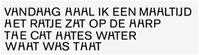 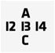
Perceptuele predispositie.
Een andere manier waarop de context en je verwachtingen je perceptie beïnvloeden is door gepredispositioneerd te zijn, oftwel de mate waarin je bent voorbereid om aanwijzingen in een stimulus op te merken en er onmiddelijk op te reageren. Je kunt perceptuele predispositie definieren als de gereedheid om een specifieke stimulus te herkennen in een bepaalde context. Een vrouw die zojuist moeder is geworden, is bijvoorbeeld gepredispositioneerd om het huilen van haar kind op te merken. Meestal zorgt een perceptionele dispositie ervoor dat je een meerduidige stimulus omzet in de stimulus die je verwachtte. Om zelf te ervaren hoe perceptuele predispositie in zijn werk gaat, moet je de twee reeksen woorden hieronder eens snel doorlezen. In het beeld hieronder hebben we de neiging om k??s aan het eind van de bovenste reeks anders te lezen dan de k??s aan het eind van de onderste reeks. Door de betekenis van de woorden voorafgaande aan de stimulus ontstaat een bepaalde perceptuele predispositie die je ertoe brengt om k??s te lezen als Kaas. Voornamen vormen een andere perceptuele predispositie, waardoor je k??s leest als ‘Kees.
LEVERWORST, BOTER, JAM, HAGELSLAG, HAM, K??S
BOB, HANS, DAVID, WILLEM, TOM, K??S
Perceptie in de context van cultuur
Crosscultureel psychologen hebben gewezen op andere culturele verschillen in perceptie. Verschillende onderzoeken ondersteunen het idee dat mensen die in een omgeving leven waar grote objecten en gebouwen rechte zijden en hoeken van negentig graden hebben, vatbaarder zijn voor verschillende illusies dan degenen die in een ‘niet- geconstrueerde’ omgeving leven. Neem bijveoorbeeld de beroemde ponzo-illusie[7] of de Muller-Lyner illusie.[8] Deze optische illusies kunnen ons helpen om enkele fundamentele eigenschappen van sensatie en perceptie te begrijpen, en toten aan dat ontwikkeling en cultuur een belangrijke rol spelen in perceptie
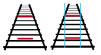 Ponzo-illusie
Proefpersonen die de afbeelding van de Ponzo-illusie (zie figuur) hadden bekeken, werd de volgende vraag gesteld: ‘Welke balk is langer, de bovenste, of de onderste? In feite zijn beide balken even lang. Uit onderzoek blijkt echter dat het antwoord op de vraag sterkt afhankelijk is van cultuurgerelateerde ervaringen. Dit komt omdat we bij het bepalen van afmetingen en afstand gebruik maken van een groot aantal aangeleerde aanwijzingen. Voorbeelden hiervan zijn dat zijn. Ook hebben we dingen in perspectief gezien, waarbij evenwijdige lijnen (zoals die van een treinspoor in de verte naar elkaar toe lijken te lopen.) Zulke leerervarigen maken je gevoelig voor illusies zoals de Ponzo-illustratie, hoewel de aanzijzingen voor afmetingen en afstanden in die afbeelding onbetouwbaar zijn.
En hoe zit het dan met mensen die in een cultuur leven waar ze veel minder met dat soort aanwijzingen in aanraking komen? Dat heeft men onderzocht op het eiland Guam, dat in de Grote Oceaan ligt en niet over Ponzo-achtige spoorlijnen beschikt.[9] De wegen op Guan zijn bovendien zo kronkelig dat de bewoners zelden kunnen zien dat de wegbermen in de verte ‘naar elkaar toe lopen’. Mensen die hun hele leven op Guam hebben gewoond zijn dus waarschijnlijk minder in de gelegenheid geweest om zich de perceptuele aanwijzing eigen te maken dat lijnen die naar elkaar toe lopen een indicatie voor afstand zijn. Zoals de onderzoekers al hadden voorspeld, waren volwassen proefpersonen op Guam minder gevoelig voor de Ponzo-illusie dan de proefpersonen van het vasteland. Met andere woorden, ze zeiden minder vaak dat de bovenste balk in de afbeelding langer was dan de onderste. Deze uitkomsten onderbouwen het argument dat onze ervaringen en omgeving invloed hebben op onze percepties.
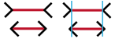 Müller-Lyer illusie.
Bij de Müller-Lyer illusie (zie figuur) wordt de volgende vraag gesteld: Als je de pijlpunten niet meerekent, welke van de twee horizontale lijnen in deze figuur lijken dan langer? Vrijwel iedereen zal vaststellen dat de ene lijn langer is dan de andere. Als je meet, zul je uiteindelijk zien dat de horizontale lijnen precies even lang zijn. Wat is hiervoor de verklaring? Door deze vraag worden psychologen al meer dan honderd jaar gëintrigeerd, maar over het antwoord op deze vraag zijn psychologen het nog steeds niet eens. Er is een theorie waarin beweerd wordt dat we de figuren van Müller-Lyer onbewust als driedimensionale voorwerpen interpreteren. We zien de uiteinden dus niet als pijlpunten, maar als hoeken die naar ons toe komen, of van ons af wijzen, zoals de binnen- en buitenhoeken van een gebouw of ruimte. Het lijkt voor ons alsof de lijn met de pijlpunten die naar buiten wijzen dichterbij is en korter. Waarom? Wanneer we de beelden van twee voorwerpen even groot zijn, en we denken dat het ene voorwerp verder weg is dan het andere, nemen we aan dat het verst verwijderde voorwerp groter is. Ook naar de interpretatie van de Müller-Lyer illusie is onderzoek gedaan naar een cultuur waar driedimensionele perceptie anders is. In 1977 ging Richard Gregory naar Zuid-Afrika om een groep Zoeloes te bestuderen die leeft in wat hij een ‘cirkelvormige’ cultuur noemde.[10] Esthetisch prefereren deze mensen ronde vormen boven lijnen en rechte hoeken. Hun ronde hutten hebben ronde deuren en ramen. Velden waar eten op verbouwd wordt, worden bewerkt volgens ronde lijnen, en kinderspeelgoed heeft alleen ronde lijnen. Toen Gregory de Zoeloes met de Müller-Lyer illusie confronteerde, bleek dat zij meenden dat de lijnen vrijwel dezelfde lengte hadden. Ook deze illusie wijst er op dat er aangeleerde apecten van perceptie bestaan.
2.2. Perceptie gebaseerd op ingebouwde denkprocessen
Het bestaan van ingebouwde denkprocessen die worden gebruikt bij perceptie
In tegenstelling tot de gedachte dat perceptie gebaseerd wordt op aangeleerde denkprocessen, kunnen we er ook van uit gaan dat mensen aanleg hebben voor bepaalde cognitieve processen. In dit geval kunnen we stellen dat de omgeving ons alle informatie verstrekt die we nodig hebben om de wereld gewaar te worden. Meer informatie (zoals herinneringen, ervaringen, voorkennis) hebben we nauwelijks nodig.
In dit geval kunnen we er van uit gaan dat een object niet los kan worden gezien van de achtergrondstructuur. Als het inderdaad waar is dat onze omgeving ons alle benodigde informatie verstrekt die we nodig hebben om percepten te vormen, is het aannemelijk dat er principes zijn die we volgen bij het vormen van percepten. Er zouden collectieve kenmerken moeten zijn in waarnemingen waardoor mensen dezelfde percepten vormen. De interpretatie van deze kenmerken hangt samen met aangeboren perceptuele vermogens.
Vormgeving heeft daarbij de unieke mogelijkheid om informatie te benadrukken of af te zwakken: te vergelijken of er rangorde in aan te brengen is. Vormgeving kan groeperen, sorteren, selecteren, weglaten of herkenbaar maken. Voor sommige mensen lijkt vormgeving vooral samen te hangen met individuele smaak, maar dankzij de psychologie weten we dat vormgeving niet per definitie zo ongrijpbaar hoeft te zijn. Er bestaan wetten die ervoor zorgen dat we beeldelementen bijvoorbeeld makkelijk kunnen groeperen, waardoor vormgeving rustig en overzichtelijk op ons overkomt, deze wetten maken het interpreteren van beeldelementen van buitenaf gemakkelijker.
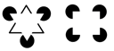 In de menselijke hersenen geldt de wet van het minste moeite. Hersenen zetten beeldelementen om in simpele, herkenbare vormen. Je zou bijvoorbeeld naar de afbeelding hieronder kunnen kijken, en wat je ziet is waarschijnlijk een driehoek die op zijn kop staat, en een er achter, met zwarte randen. Je zou jezelf de vraag kunnen stellen of je wel echt twee driehoeken waarneemt. In feite zijn er namelijk geen driehoeken. De hersenen creëren de vorm van een driehoek op basis van de lege ruimte binnen de cirkels, want dat is wat de hersenen verwachten te zien. Deze illusie wordt de Kanizsa driehoek genoemd, genoemd naar de italiaanse psycholoog Kanizsa die deze illusie ontwikkelde in 1955.[11] De afbeelding er naast suggereert dezelfde illusie, maar dan met een vierkant.
Na deze illusies bestudeerd te hebben, kunnen we vaststellen dat de hersenen snelkoppelingen maken, om snel een interpretatie te kunnen vormen van wat we zien in de wereld. Meestal werkt dit, maar het kan ook misleidend werken. Er zijn verschillende manieren waarop beïnvloeding of zelfs misleiding mogelijk is.
De Gestaltwetten van perceptuele ordening.
Waarom ervaren we het ene als voorgrond en het andere als achtergrond. Hoe en waarom zien we de samenhang tussen voorwerpen? Welke eigenschappen zorgen ervoor dat we twee voorwerpen van elkaar kunnen onderscheiden? Dit zijn vragen die psychologen zich in de jaren twintig stelden. Het onderzoek van drie Duitse psychologen, Wertheimer, Koffka en Kohler leidde tot de Gestaltwetten van perceptuele ordening. [12] In deze tijd stonden de neurowetenschappen uiteraard nog in de kinderschoenen en waren er geen MRI- of PET-scans. Onderzoek werd gedaan door proefpersonen te confronteren met reeksen eenvoudige geometrische figuren. Vervolgens bracht men in enkele factoren een paar veranderingen aan en observeerde welke invloed dat had op de manier waarop mensen de structuur wan de reeks waarnamen. Dit onderzoek leidde tot een serie getaltwetten van perceptuele ordening. Beeldend kunstenaars en ontwerpers uit die tijd begonnen de gesaltpsychologie te gebruiken om hun werk te verbeteren. Er verschenen ook boeken over gestaltpsychologie in het kunstonderwijs.
De wet nabijheid.
Het principe van nabijheid stelt dat we dingen bij elkaar voegen als ze zich bij elkaar in de buurt bevinden. Hoe dichter elementen bij elkaar staan, hoe sneller we deze als een groep zullen waarnemen, terwijl dingen die ver van elkaar staan als aparte groepen worden wargenomen. Het groeperen van individuele elementen komt voor vooral wanneer een object incompleet is, of niet volledig gesloten is. Mensen maken van een beeld een geheel in hun hoofd door de missende informatie in te vullen. De hersenen zijn geneigd om patronen te creeren, zelfs als er niet direct patronen waargenomen worden. Men interpreteert de witruimte, of het gebrek er aan als een patroon. In het voorbeeld van Cassandre: ‘Bifur Typeface’, vult onze perceptie ook missende informatie in om met deze losse onderdelen letters te waarnemen. Zonder de grijze lijnen was er waarschijnlijk geen sprake van leesbaarheid. In het Voorbeeld van Bart van der Leck uit 1919 nemen we ook een persoon waar in de losse driehoeken. Een ander voorbeeld is het waarnemen van letters in afzonderlijke, individuele vormen, een affiche van Jan Bons voor De Appel. Het laatste voorbeeld is van Werkman. Enkele individuele figuren vormen samen een machine.
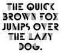 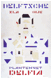 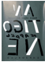 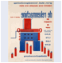
Wet van gelijkheid.
Volgens Wertheimers wet van gelijkheid voegen we dingen samen die een gelijk uiterlijk hebben. Hun gelijkwaardigheid kan zichtbaar worden gemaakt door een bepaalde overeenstemming in grootte, kleur, vorm, lengte, of op andere overeenstemmende kenmerken.
Als je bijvoorbeeld naar een voetbalwedstrijk kijkt, gebruik je de kleuren van de kleding om de spelers op grond van hun gelijkenis te ordenen tot twee teams. Dit geldt ook bij visuele voorstellingen, hier kunnen verschillende elementen als een eenheid gepresenteerd worden door ze gelijkenissen te geven. In het onderstaande ontwerp van Sandberg, is te zien dat de wet van gelijkheid de wet van nabijheid overheerst omdat bepaalde elementen eerder een groep lijken te vormen door de grootte en de kleur dan door de afstand t.o.v. elkaar. Ook in het ontwerp van Piet Zwart, een visuele identiteit uit de jaren 20 vormen woorden die op dezelfde manier er uit zien een groep. Het voorbeeld van Paula Scher toont aan dat de teksten gegroepeerd kunnen worden d.m.v. kleur en vorm. De wet van gelijkheid wordt o.a. toegepast bij infographics, zoals het Isotype syteem van Otto Neurath.
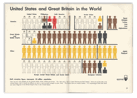 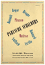 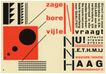 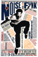
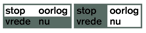 Eigen voorbeeld: D.m.v. het gebruik van kleur is het binnen de wet van gelijkheid ook mogelijk om te beinvloeden wat mensen zien, of denken te zien. Kleur kan de leesbaarheid beïnvloeden, je kunt elementen ermee accentueren die een betekeniss hebben. Het figuur hieronder laat zien hoe kleur ervoor kan zorgen dat de ene interpretatie meer aandacht trekt dan de ander. Daarnaast hebben kleuren vaak ook een betekenis, zo wordt rood vaak opgevat als iets dat met gevaar of iets negatiefs temaken heeft, terwijl groen vaak geassocieerd wordt met iets positiefs.
Wet van geslotenheid
Figuren zien wij het liefst als compleet, ook als deze niet compleet zijn. Onze hersenen zijn er op ingesteld om lege plekken in te vullen, en proberen objecten onderling te matchen tot iets dat we herkennen. We zijn dus geneigd om visuele gaten te verbinden of op te vullen met een lijn, kleur of patroon. Dingen die dus niet volledig zijn, maken we in onze hersenen wel volledig. De delen worden van elkaar gescheiden door ‘subjectieve contouren’: grenzen die niet in het beeld voorkomen, maar alléén in de subjectieve waarneming van de waarnemer. In sommige figuren zien we dus een incompleet figuur aan voor een compleet figuur zonder dat hier fysische randen voor aanwezig zijn in het figuur.. Het komt er dus op neer dat we geneigd zijn dingen samen te voegen als ze zich dicht bij elkaar bevinden. Dit is ook te zien in het logo van het WWF. Het logo laat een pandabeer zien, maar ook hier is sprake van zwarte vlekken. De interpretatie van het beeld als pandabeer heeft dan weer te maken met aangeboren aspecten in het denken. In het ontwerp van Dick Elffers is een muziekinstrument te zien, onderdelen die dicht bij elkaar geplaatst zijn, vormen samen het figuur. In een ontwerp van Sul Bass lijkt de vorm van een mens zichtbaar, maar als we beter kijken, is het slechts een verzameling vormen die lijken op ledematen.
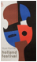 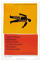
Wet van continuering.
De Gesaltwet van continuering komt het neer op het feit dat we ononderbroken en netjes afgewerkte figuren verkiezen boven onsamenhangende figuren. Elementen die gerangschikt zijn in een lijn of curve zullen eerder waargenomen worden dan elementen die niet in een lijn of curve gerangschkt zijn. Dit laat ons denken dt er een continuïteit in de lijn is, ook als er eigenlijk helemaal geen continuïteit is. In het ontwerp van Werkman zien we letters die in een doorgaande kromming zijn geplaatst, deze worden door onze waarneming gegroepeerd. In het ontwerp van Paul Schuitema worden we gestuurd in de leesvolgorde d.m.v. grootte en de wet van continuering. Ook in een onwerp van Paula Scher, een compositie van typografie, nemen we groepen letters waar omdat ze continuïteitpresenteren.
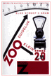 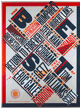 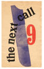
Wet van gemeenschappelijke bestemming.
Visuele elementen (de individuele gans uit een groep, de vis uit een school of het harmonielid) die zich gezamenlijk voortbewegen neem je waar als een enkele gestalt. Het feit dat de groep beweegt, draagt bij aan het onderscheid dat te maken is tussen de achtergrond en de groep. Figuur A19 impliceert beweging. De groep driehoeken die dezelfde kant op beweegt of wijst, wordt als groep waargenomen. In het voorbeeld A20, een ontwerp van Takenobu Igarashi geldt ook de wet van gemeenschappelijke bestemming. De compositie van stippen zorgt ervoor dat we een soort tunnel van stippen waarnemen, dit komt door de grootte en de plaatsing van de stippen. In het ontwerp van Paul Schuitema leest men de tekst in als context bij het beeldmateriaal, omdat deze in dezelfde richting wijzen.
|
|
|
|
|
|
|
|
||
|
|
|
|
|
|
|
Voor- en achtergrond
Een van de meest fundamele perceptuele processen die gesaltpsychologen hebben geïdentificeerd is het onderscheid tussen voor- en achtergrond. De voorgrond vormt het figuur waar alle aandacht naartoe gaat, de achtergrond is de overige ruimte waartegen we het figuur waarnemen. Sommige objecten kunnen hierdoor op verschillende manieren geinterpreteerd worden. het logo van fedEx bevat een pijl tussen de E en de X. In het otwerp van Lex Drewinski over Rasisme zie je zowel een voet als het gezicht er onder. Ook in een ontwerp van Max Kisman is sprake van deze wet. Het is niet mogelijk om beide vormen tegelijkertijd waar te nemen.
 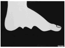
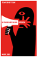
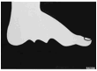
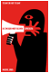
Funamenteel aan alle andere principes: Wet van Pragnanz
De gesaltpsycholoog stelt dus dat elke vorm van perceptuele ordening een bewijs vormt voor het meer fundamentele idee dat onze perceptie wordt beinvloed door aangeboren, in de hersenen verankerde patronen. Volgens de gestaltpsychologie zijn al deze ordeningswetten specifieke voorbeelden van een meer algemeen principe: de wet van pragnanz (‘pregnantie’’), die zegt dat we bij voorkeur dingen in de eenvoudigse vorm waarnemen, het patroon dat ons de minste cognitieve inspanining kost. Pragnanz is het meest algemene gestaltprincipe, dat ook wel het minimumprincipe van perceptie wordt genoemd.
Perceptie: Nurture en Nature.
Er is veel onderzoek verricht naar psychologische principes die ten grondslag liggen aan perceptie. De psychologen die deze principes onderzoeken, hebben enkele theorieën geformuleerd die moeten verklaren hoe perceptie in zijn werk gaat. We kennen nu de theorie van op leren gabseerde inferentie en de gestalttherorie. Bij de gesalttheorie wordt de nadruk op aangeboren, en de theorie van op leren gebaseerde inferentie legt de nadruk op aangeleerd. We hebben hier in wezen te maken met een eeuwenoude filosofische vraagstelling. Is de waarnemer in aanleg een onbeschreven blad waarop de natuur haar tekens aanbrengt, is perceptie dus aangeleerd? Of ordenen we juist de signalen die we uit de wereld opvangen volgens ingebouwde regels, en is perceptie in dat geval dan toch aangeboren?
Perceptie zou, als we ons baseren op ingebouwde denkprocessen, voorspelbaar moeten zijn. In dit geval zou perceptie het gevolg van alleen externe factoren moeten zijn. Als we deze theorie volgen, heben we het over de ‘Black Box’ visie. Dit houdt in dat alles wat niet observeerbaar is, zoals emoties, achterliggende motieven en herinneringen, buiten beschouwing zou moeten worden gelaten bij bepaalde onderzoeken. Deze dingen zijn ook niet bruikbaar in de wetenschap, omdat niet kan worden aangetoond in welke mate een rol spelen bij perceptie en gedrag. Toch is het heel plausibel dat eerder opgedane kennis een belangrijke rol speelt in de perceptie.
De gestalttheorie benadrukt dat de hersenen van nature zijn ingericht om onze perceptie op een specifieke manier te sturen, maar tegelijkertijd kunnen we met zekerheid zeggen dat perceptie evenzeer wordt beïnvloed door ervaringen en leren, zoals Helmholtz vermoedde. We hebben beide gezichtspunten nodig om de complexe, constant veranderende wereld van de perceptie te kunnen begrijpen.
2.3. Perceptie, bewust versus onbewust.
Het auomatische- en bewuste systeem.
Wanneer we geconfronteerd worden met informatie, kunnen we deze informatie, afhangend van de situatie met of zonder mentale inspanning verwerken. Het menselijk denken lijkt hierbij twee informatieverwerkingsmethoden te bevatten. Sigmund Freud maakte al het onderscheid tussen deze twee manieren van informatieverwerking, namelijkhet bewuste en het onderbewuste.[13] Naar deze twee manieren van verwerken van informatie is veel onderzoek gedaan, er zijn veel verschillende visies over hoe deze systemen werken en hoe ze genoemd moeten worden.
Laten we voor het gemak deze systemen een eigen naam geven: het automatische systeem en het bewuste systeem. Het automatische systeem werkt buiten het bewustzijn, dit systeem werkt als een groep kleine robotjes die simpele klusjes voor het individu doen om het denken gemakkelijker te maken. Je bent je niet bewust van het werk van deze robotjes. Freud dacht dat het automatische systeem ervoor kon zorgen dat mensen soms verkeerde dingen zeggen of doen. Ook is het zeer waarschijnlijk dat het atuomatische systeem juist bijdraagt door binnenkomende informatie te interpreteren, organiseren, en categoriseren voordat het naar het bewuste denken gaat. Wellicht speelt het automatische systeem een grotere rol in ons denken dan we vermoeden. Mensen denken vaak dat ze zich bewust zijn van alles dat zich afspeelt bij het vormen van motivaties voor het maken van keuzes of handelingen.
Het bewuste systeem vormt het andere deel van ons denken, het deel waarover we zelf controle hebben, de kant die zorgt voor bewuste gedachten, keuzes en handelingen. Het in werking zetten van dit systeem kost moeite. Het onderbewuste systeem wordt echter automatisch in werking gezet, vaak zelfs zonder dat we daar iets van merken. > Mijn interpretatie van Kahnemann
Daniel Kahneman: ‘Fast thinking’ en ‘Slow thinking’
Daniel kahneman[14] maakt voor het automatische- en bewuste denken het onderscheid tussen ‘fast thinking’ (systeem 1) en ‘slow thinknig’ (systeem 2). Als iemand bijvoorbeeld de rekensom 2+2 voorgelegd krijgt, ‘overkomt’ deze persoon iets volgens Kahneman. De woordkeuze is hierbij erg bewust, want deze persoon doet zelf niets, is eigenlijk passief in deze situatie. Wat er dan wel gebeurt heeft temaken met gegevens die het geheugen aan deze persoon levert levert, deze gegevens worden opgeroepen door een bepaalde stimulus, zoals woord of beeld. Een ander voorbeeld zou kunnen zijn: de hoofdstad van Frankrijk. Vrijwel direct komt ergens het woord ‘Parijs’ opborrelen. In andere gevallen wordt er een heel pakket aan ideeen en concepten op in ons hoofd aangeleverd bij confrontatie met een bepaald gegeven. Al deze voorbeelden hebbben te maken met een automatische modus die een rol speelt bij het interpreteren van informatie. Deze automatische processen worden door Kahneman samengevat als het werk van systeem 1, of wel ‘fast thinking’.
Systeem 2, ‘slow thinknig’ kunnen we definieren door het woord ‘moeite’ te gebruiken. Wanneer iemand bijvoorbeeld de volgende rekensom voorgelegd krijgt: 17x24, weet diegene vrijwel direct dat het antwoord meer moet zijn dan 100 (werk van systeem 1) Maar om tot het echte antwoord te komen (408) is er toch echt mentale inspanning nodig: hier moet moeite voor gedaan worden, er is mentaal werk voor nodig. Soms worden taken aangeleerd door systeem 2, maar later overgenomen door systeem 1. Een voorbeeld hiervan is autorijden. In principe gaat dit automatisch, tenzij er zich een ingewikkelde situatie op de weg voordoet. Dan is de chauffeur even niet in staat om over andere dingen na te denken want systeem 1 is even aan het werk. Daarna neemt systeem 2 het weer over.
Samenvattend: Systeem 1 is werkt intuitief, systeem 2 heeft temaken met logica. Volgens Kahnemen is het bewuste, logische systeem erg lui.
Dit onderscheid, het idee van automatisch- en rationeel denken werd 40 jaar geleden al geintroduceerd door psychologen. Het is inmiddels verder ontwikkeld door veel verschillende mensen. Kahneman heeft het op zijn manier weer uitgebreid met de metaforen van systeem 1 en systeem 2, en begrijpelijk gemaakt voor een veel breder publiek. Wat voor ons als ontwerpers interessant is, is het feit dat het meeste dat er gebeurt in onze hersenen gestuurd wordt door systeem 1, zonder aandacht, automatisch. In onze hersenen geldt dus de wet van het minste moeite.
Ab Dijksterhuis over bewuste- en onbewuste denkprocessen.
Ab Dijksterhuis probeert in zijn boek ‘Het slimme onbewuste’[15] aan te tonen hoe groot de invloed van het onbewuste denken is in ons leven. Volgens Dijksterhuis zijn er in de loop der tijd een aantal misverstanden ingeslopen en vastgeroest in ons denken. Volgens hem leven we in de veronderstelling dat de beslissing beter wordt als we ergens lang over nadenken, het liefst met behulp van middelen als www.vergelijk.nl en de Consumentengids. De oorzaak? Dijksterhuis noemt de opvattingen van René Descartes als oorzaak hiervoor. Descartes heeft het bewsutzijn op een voetstuk geplaatst, en ons enigszinds verblind voor zaken die onbewust actief zijn. Descartes beweerde dat het lichaam los staat van de geest, en aan heel andere wetten beantwoordt. Volgens Descartes is de geest, of ook wel het bewustzijn datgene wat onst stuurt en onze beslissingen neemt. Dijksterhuis beweert dat geest en lichaam niet los van elkaar te zien zijn. Ons lichaam neemt allerlei beslissingen, ook als de geest er anders over denkt, niet alle beslissingen zijn namelijk te verklaren door ratio. Volgens Dijksterhuis ontkende Descartes het bestaan van het onderbewuste.
Wat het onbewuste zoveel sterker maakt dan het bewuste is volgens Dijksterhuis is dat de verwerkingscapaciteit van het onbewuste ongeveer 200.000 keer zo groot als die van het bewustzijn. Bij moeilijke beslissingen kan het bewustzijn de hoeveelheid informatie niet meer helder op een rij krijgen, zeker als er sprake is van veel informatie of grote tijdsdruk. Op dat moment is het onbewuste wel in staat om die informatie op te nemen en te verwerken. Genoeg redenen voor ontwerpers dus om na te denken over de werking van het onbewuste.
2.4. De grafisch ontwerper als visueel psycholoog.
Om na te gaan of een ontwerp het beoogde doel in de psyche van de waarnemer zal bereiken, is het relevant om na te gaan of de vormgeving in dienst van de boodschap staat, of omgekeerd. Ook is het relevant om te controleren of alle elementen die in het ontwerp gebruikt zijn, wel echt noodzakelijk zijn, wellicht kunnen er beeldelementen weg. Ook is het waardevol voor ontwerpers om van tevoren vast te stellen wat er met het onwtwerpwerk bereikt moet worden, en daarna na te gaan welke principes m.b.t. visuele perceptie bruikbaar zijn om dit doel te bereiken.
Lessen die we kunnen leren uit aangeleerde denkprocessen
De theorie van op leren gebaseerde inferentie van Herman von Helmholtz leert ons dat onze interpretaties in feite hypotheses zijn over waargenomen dingen. Deze hypotheses zijn gebaseerd op aangeleerde manieren van waarnemen. Hierbij zullen de hersenen altijd streven naar consistentie met eerder opgedane ervaringen.
Voor ontwerpers betekent dit dat het mogelijk is om in te spelen op verwachtingen die mensen bewust- of onbewust zullen hebben bij het zien van bepaalde beelden of woorden. Bij het inspelen op verwachtingen is het belangrijk om te veel dubelzinnigheid de vermijden, en het ontwerp te testen om te controleren of alle gebruikers het ontwerp zullen interpreteren op de manier waarop het ontwerp geïnterpreteerd dient te worden. Een ontwerper moet dus in zekere zin de ‘visuele taal’ van het publiek kennen. Waar dubbelzinnigheid onvermijdelijk is, is het verstandig om hints te gebruiken om dubbelzinnigheid op de beoogde manier te sturen.
Lessen die we kunnen leren uit aangeboren denkprocessen
Kennis over gestaltprincipes leert ons dat vormen die bij elkaar horen een bepaald onderling verband moeten hebben. Ze moeten visuele relaties hebben, dit betekent dat ze bij elkaar staan, dezelfde grootte, dezelfde kleur, dezelfde richting of ritme bevatten. Ook de achtergrond van een compositie heeft invloed op het wel- of niet interpreteren van elementen als een groep. De kennis van Wertheimer dwingt ons om na te denken over de vraag of alle onderdelen met gelijke eigenschappen wel echt wat met elkaar te maken hebben.
Compositie kan een middel zijn om waarneming te beinvloeden, zo hangt visuele consistentie in een compositie sterk samen met de gestaltwetten. Eelementen die op verschillende plekken dezelfde functie moeten vervullen, dienen consistent op de zelfde wijze geplaatst te worden. Om te controleren of er in een ontwerp goed ingespeeld wordt op aangeboren denkprocessen, zou een ontwerper kunnen nagaan of de waarnemer een logische volgorde kan vinden, of de continuiteit tussen alle onderdelen wel gewaarborgd is, en of alle vormelementen wel echt noodzakelijk zijn.
Lessen die we kunnen leren van kennis over het onderbewuste
Filosofen, sociologen en gedragseconomen wijzen ons er op dat het onderbewuste een grotere rol speelt in het maken van beslissingen dan we denken. Tot op zekere hoogte lijkt ons bewustzijn de baas, maar in veel gevallen is het toch het onderbewuste dat in onze hersenen de dienst uit maakt. Het bewuste denken is ‘lui’, en zal veel signalen negeren, waar het onderbewuste deze wel op zal pakken. Het gebruik van deze signalen in visuele middelen kan daardoor erg waardevol zijn. Zoals eerder gezegd geldt in de hersenen de wet van het minste moeite, dit inzicht leert ons o.a. dat we het gebruik van tekst moeten beperken. Het gebruik van zo weinig tekst als mogelijk, net genoeg om mensen in staat te stellen om het ontwerp te begrijpen, draagt bij aan het gemak waarmee een visuele boodschap te ontcijferen valt, evenals inspelen op onbewuste denkprocessen.
3. de invloed van semiotiek op perceptie.
3.1. Het herkennen en interpreteren van dingen die een betekenis dragen.
Onze hersenen onderhouden dus een model van onze persoonlijke belevingswereld, en werken dit bij. Dit model bestaat uit associaties tussen ideeen, gebeurtenissen, handelingen en ontwikkelingen die in het verleden plaatsvonden. Hierop worden nieuwe interpretaties en ideeen gebaseerd. Vaak maken ontwerpers bij het maken van communicerende beelden gebruik van iets uit dit model. Iets dat voor anderen al herkenbaar is. We gebruiken bepaalde iconen of symbolen, die op een bepaalde manier geinterpreteerd dienen te worden, dan spreken we van Semiotiek. Er is hierbij interactie is tussen wat wij waarnemen en ons model van de persoonlijke belevingswereld die is gebaseerd is op verschillende aspecen van perceptie.
In het vorige hoofdstuk ben ik op zoek gegaan naar wetmatigheden die bestaan in onze hersenen die de basis vormen voor onze perceptie. In dit hoofdstuk zoek ik een antwoord op de vraag hoe het komt dat we objecten groeperen of juist apart van elkaar zien, hoe het komt dat deze wetmatigheden binnen de hersenen kunnen verschillen per cultuur.
Maar hiermee geef ik geen antwoord op andere vragen, zoals waarom we weten dat een kruis iets met het geloof te maken heeft, of hoe we bepaalde kleuren met bepaalde dingen associeren, daar hebben we Semiotiek voor nodig. Semiotiek wordt gezien als de leer der tekens, of beter gezegd: de leer van het proces van betekenen. In de semiotiek worden de elementen die betekenis dragen, ‘tekens’ genoemd. Er zijn niet alleen tekens te vinden in taal of in beeld, maar veel breder in de wereld om ons heen. Zo kan een bepaald geluid ook al een teken zijn. Niet alles is een teken, tekens zijn herkenbaar aan verschillende aspecten: ten eerste is het waarneembaar, ten tweede verwijst het naar iets dat afwezig is, en ten derde functioneert het in een gemeenschap.
Vaak geeft de plaats of de context aanwijzingen om het teken op de juiste wijze te interpreteren. Een verkeersbord waarop een kind en een volwassene staan afgebeeld heeft een heel andere betekenis als een foto van een kind en een volwassene bij een tekst over gescheiden ouders. Tekens krijgen dus vaak hun betekenis door de plaats, context of de combinatie met andere tekens. Sommige tekens kunnen niet begrepen worden zonder andere tekens er bij te halen, zoals het woord ‘rijk’ dat kan helpen bij het definieren van het begrip ‘arm’ en andersom, net als het woord ‘oud’ gedefinieerd kan worden door het woord ‘jong’ erbij te halen.
3.2. Drie soorten tekens volgens Peirce.
Door Charles Sanders Peirce wordt er een onderscheid gemaakt tussen drie typen relaties tussen een teken en een betekenis. [16]
We kunnen volgens Peirce een betekenis toekennen aan een teken omdat we een overeen komst kunnen zien (1), omdat we een oorzaak kennen uit ervaring (2) of omdat we die uitkomst nu eenmaal hebben afgesproken (3). Respectievelijk is er sprake van een iconische, indexicale en symbolische relatie tussen teken en afwezige betekenis. Iconische relaties zijn gebaseerd op uiterlijke gelijkenis. Indexiale relaties hebben een sterk verband met ervaringen van het individu. Symbolische relaties berusten op afspraken die bestaan binnen een bepaalde gemeenschap.
Iconische tekens. (Relatie beeld en betekenis is gebaseerd op herkenning)
Als de relatie tussen het teken en de betekenis iconisch is, is de relatie tussen teken en afwezige gebaseerd op gelijkenis of overeenkomst. Het beeld is zelf datgene waar het naar verwijst, pictogrammen zijn bijvoorbeeld vaak vereenvoudigde afbeeldingen van objecten. Voorbeelden hiervan zijn, een bord waarmee wordt aangegeven dat er op een bepaalde locatie gezwommen of gepicknickt mag worden, of een weergave van een gestilleerde telefoon op een praatpaal langs de weg. Omdat aan de basis van elk betekenisvormingsproces de gewaarwording ligt, leent het zintuiglijk waarneembare, gerepresenteerd in de vorm van iconen, zich het beste tot effectieve communicatie in een zeer brede gemeenschap. Iconische tekens zijn dus het breedst toegankelijk.
Indexiale tekens. (Relatie beeld en betekenis is gebaseerd op associaties)
We spreken van indexiale tekens als het verband tussen het teken en de betekenis gebaseerd is op een oorzaak-gevolgrelatie. Dit teken suggereert dat het niet kan bestaan zonder het beeld waarnaar het verwijst. Indexiale tekens vertonen verwantschap met een object zonder er op te lijken. Daarbij kunnen we denken aan een oorzaak-gevolgrelatie, en kenmerkrelatie of een deel-geheelrelatie. Rook duidt op vuur, of de stand van een windvaan als teken voor de windrichting. Andere voorbeelden: een icoon van een verrekijker wijst op een mooi uitzicht, een ijskristal wijst op bevriezing, de klok verwijst naar de tijd. Indexiale tekens werken dus als indicaties, niet als imitaties, zoals iconen dat wel doen. Doordat Indexiale tekens wijzen op indicaties, hebben ze vaak het meeste overtuiginskracht t.o.v. andere soorten tekens.
Sybolische tekens. (Relatie beeld en betekenis is gebaseerd aangeleerde afspraken)
De relatie tussen teken en betekenis wordt symbolisch genoemd wanneer zij zich baseert op wetmatigheid, afspraken, regels, of gewoonte. Waarneming en ervaring zijn in dit geval niet toereikend om te ontdekken wat een symbool representeert. Er is tussen het teken en het afwezige nauwelijks een verband, noch uiterlijk (iconisch) noch feitelijk (indexiaal). Een voorbeeld hiervan is het volgende: Als je water in al zijn gedaanten, van damp via vloeistof tot ijs, herkennen kunt en je bovendien levenslange ervaring hebt opgebouwd met ijzel, sneeuw en regen, dan nog kom je er spontaan niet achter, dat H2O de scheikundige aanduiding voor water is. Een kruis symboliseert de katholieke kerk, terwijl een ander kruis het rode kruis symboliseert. In beide gevallen lijkt het kruis niet op de kerk of een organisatie als het rode kruis. Ook hebbren we nog het andreaskruis op een oranje achtergrond: dat staat heel ergens anders voor: schadelijk, irriterend. We hebben deze verwijzingen ooit afgesproken. Het teken staat symbool voor het object. Zo weten we bijvoorbeeld dat de schelp van Shell toch zeker niet verwijst naar een fastfoodketen.
3.3. Twee manieren om een betekenis toe te kennen aan een gewaarwording volgens Barthes.
Semioticus Roland Barthes (1915-1980) analyseerde in de jaren ‘70 hoe een publiek betekenis geeft aan een teken. [17] Volgens hem krijgen tekens in principe altijd op een detonatieve of connotatieve manier betekenis. Denotatie heeft betrekking op de letterlijke betekenis van een teken en connotatie op de subjectieve betekenis.
Denotatie
Denotatie gaat over wat er te zien en te herkennen is. De betekenis van het waargenomene wordt buiten beschouwing gelaten. Denotatie kan je opdelen in twee lagen, namelijk primaire denotatie en secundaire denotatie. Primaire denotatie is precies wat men ziet, en secundaire denotatie is wat men precies herkent. Wat men precies ziet, is gebasseerd op objectieve kenmerken. Wat men precies herkent, is gebaseerd op kennis die gededeeld is met andere mensen. Het gaat hier om een objectieve waarneming en betekenis.
Connotatie.
Connotatie gaat over het begrijpen en waarderen van het afgebeelde, en kunnen we opdelen in twee lagen. Bij primaire of ook wel culturele connotatie kijk je naar de gedeelde waarden binnen de cultuur waar in je leeft. Bij secundaire of persoonlijke connotatie betrekt men het tot zichzelf, wat het individu er mee associeert, op grond van zijn of haar persoonlijke ervaringen.
De indelingen van Barthes en Peirce vormen een instrument om gestructureerd te praten over het proces van begrijpen en de betekenis van beeld. Door de driedeling van Peirce weten we dat er voor de symbolische betekenis van een beeld de meeste kennis nodig is over de codes in een cultuur of samenleving. De iconische betekenis van een beeld is het gemakkelijkst om te verwerken, en voor een groot deel ook intercultureel te begrijpen. De vierdeling van Barthes laat zien dat er een mate is waarin je het effect van een beeld kunt voorspellen.
3.4. De grafisch ontwerper als Semioticus.
De indelingen van Barthes en Peirce betreffen verschillende elementen in het proces van communiatie. Barthes beschrijft een psychologisch proces, een proces dat plaatsvindt in het hoofd van het publiek, en Peirce beschrijft de wijze waarop een teken naar een object verwijst.
Deze inzichten geven ontwerpers een instrument om het interpretatieproces van een beeld te sturen. Op die manier wordt het mogelijk om vast te stellen op welk niveau het begrijpproces goed of juist fout gaat. Bij het communiceren naar een doelgroep die de ontwerper niet kent, kan er bij het ontwerpen het beste gekozen worden voor een beeldtaal waar de minste kennis voor nodig is en de betekenis op een zo laag mogelijk niveau gecodeerd kan worden. Tekens kunnen hierbij waardevoller zijn dan taal.
Lessen die we kunnen leren uit de theorie van peirce
Nu we de driedeling van Peirce kennen, zien we dat voor symbolische betekenissen de meeste kennis nodig is, het gaat hier om kennis van visuele talen binnen een culutrele groep of in een samenleving. We hebben geleerd dat de iconische betekenis het gemakkelijkst te begrijpen is op intercultureel niveau door de directe verwijzing naar het voorwerp dat is afgebeeld. Indexiale tekens staan in het midden als het gaat om begrijpelijkheid. De interpretatie van indexiale tekens hangt samen met persoonlijke ervaringen. Zo heeft men in Zuid-Amerika nooit temaken met gladheid, en zal niemand de betekenis van een waarschuwingsbord voor gladheid kunnen ontlenen, ze zullen slechts een ijskristal herkennen en concluderen dat het iets met winter temaken heeft. Wanneer er tekens gebruikt worden, moet er dus vastgesteld worden dat de doelgroep de code kent: de visuele taal kennen of op de hoogte zijn van de conventies.
Behalve conventies m.b.t. de vorm van symbolen, iconen en indexiale tekens bestaan er ook andere soorten conventies. Kleurconventies kunnen bijvoorbeeld ook dienen als teken dat onderdeel is van communicatie. Kleurconventies bestaan al sinds de 13e eeuw. Aanvankelijk werden de symbolische betekenissen van kleur afgeleid van het materiaal waarvan de kleur is gemaakt. Het rood, dat kwam van de purperslak was bijvoorbeeld zo duur dat het geassocieerd wordt met koningen en kardinalen, Blauw werd gemaakt van een gesteente dat de naam Lapis lazuli droeg, het was heel kostbaar, en dus werd deze kleur voorbehouden aan de mantel van Maria. In de 14e eeuw claimden Franse koningen bepaalde kleuren voor hun persoonlijk wapen. Corporate identity bestaat dus eigenlijk al sinds de 14e eeuw. Betekenissen van kleur kunnen dus afgeleid zijn van de gebruikelijke plaats waarin deze kleuren in de natuur voorkomen, maar ze kunnen ook cultureel bepaald zijn. Zo is chocolade met een blauwe wikkel altijd melkchololade, de inhoud van een rood melkpak is karnemelk, enzovoort. Stel dat je melk in een hollanse supermarkt in een gele verpakking aantreft, dan zou je bijna denken dat er iets speciaals met de melk aan de hand is.
Kleurconventies kunnen in een cultuur zo ingeburgerd raken dat het niet verstandig is ervan af te wijken. Als je als otwerper, wilt aanggeven dat iets veilig is of goedgekeurd, dan kan je bijna niet om de kleur groen heen, en oranje en geel communiceren dat mensen moeten oppassen, en rood communiceert over iets dat onveilig of verboden is. Een ander voorbeeld van bestaande conventies is leesrichting. In het westen lezen we met de klok mee, beginnen boven en we gaan op het hoogste punt naar rechts. Tegen de klok in informatie opnemen voelt tegenintuitief. Bij het ontwepren van infographics speelt het principe van informatie verschaffen met de klok mee een bellangrijke rol. Ook in de meeste musea is de looprichting van tentoonstellingen clockwise.
Lessen die we kunnen leren uit de theorie van Barthes.
De theorie van Barthes leert ons dat het herkennen van het afgebeelde los staat van het begrijpen of waarderen van het afgebeelde. Volgens zijn theorie kun je een betere indruk op een publiek maken door een doelgroep expliciet aan te spreken op een hoog semiotisch niveau. Als het beeld aanleiding geeft tot persoonlijke associaties, maakt de kijker het zich eigen. Volgens Barthes is het proces van betekenisgeving dus wederkerig, het publiek kan een teken een andere betekenis geven dan de maker van het beeld ermee bedoeld had. Maar in zekere mate is de interpretatie van tekens door een bepaald publiek voorspelbaar.
4. de invloed van retorica op perceptie.
4.1 Retoriek, definitie.
Retorica in de ontwerp- en reclamewereld.
In het werk van grafisch ontwerpers draait het om de communicatie van een bepaalde gedachte, hierbij speelt argumentatie een rol. De manier waarop deze argumentatie in elkaar zit blijkt zowel invloed te hebben op het onthouden van de boodschap als het waarderen van de boodschap. Retrorica lijkt daarom erg van belang in een ontwerpproces dat moet leiden tot een overtuigend resultaat.
Eerst even de definitie: De ‘Ars Retorica’, letterlijk ‘welsprekendheid’, maar ook wel ‘kunst van het overtuigen’ genoemd, bestaat al eeuwenlang. Aanvankelijk had het begrip retorica alleen betrekking op het verbale domein, maar met de opkomst van de hedendaagse beeldcultuur is ook de visuele retoriek ontstaan. Retorica komt delaatste decennia erg veel voor in reclame. Denk maar eens aan slogans als ‘De Telegraaf, de wakkere krant van Nederland (Metafoor), ‘Iedereen meer pit met multivit’ (rijm) en ‘Heerlijk, helder, Heineken’ (alliteratie) Behalve in tekst kan retorica ook in visuele middelen toegepast worden. Een foto van een verminkte hand ergens in een krant of tijdschrift rond de jaarwisseling is niet neutraal informatief, maar wil de kijker een richting op sturen. In dit hoofdstuk zal ik de vraag stellen naar de overtuigingskracht van beeld an sich, en naar de middelen die in beelden kunnen worden ingezet om mensen te overtuigen van een bepaalde boodschap.
Verzwegen argumenten en standpunten in een overtuigend ontwerp.
Het komt in reclamecampagnes en grafisch ontwerp veelvudig voor dat er onderdelen uit het betoog worden weggelaten. Dit zijn onderdelen van het betoog die, gezien wat er wel staat als het ware inpliciet aanwezig zijn. Een voorbeeld van een verzwegen argument is de volgende zin: ‘Je hebt een stormparaplu nodig, je wou toch niet nat worden’ (Verzwegen argument: zonder stormparaplu wordt je gegarandeerd nat)
Standpunten kunnen ook verzwegen zijn. Een voorbeeld hier van is: ‘Er zijn heel veel kinderen in nood, als we massaal doneren aan unicef, zou er niet zoveel ellende zijn’ (Verzwegen standpunt: Dus er wordt niet genoeg gedoneerd, doneren dus!)
4.2 Ethos, pathos en logos.
Mensen kunnen dus op verschillende manieren ervan overtuigd worden dat ze een bepaalde boodschap moeten aannemen, of een bepaald product moeten aanschaffen. Het komt hierbij uiteindelijk neer op het beïnvloeden en veranderen van de attitude van deze mensen. Dit kan zoals gezegd door het gebruik van verschillende argumentaties, maar ook door in te spelen op de emoties van mensen. Bij het inspelen op het gevoel van een bepaalde groep mensen, spreken we van pathetische middelen. Hierbij kan gedacht worden aan middelen zoals humor en verschillende soorten stijlmiddelen. In de klassieke oudheid werden deze middelen in redevoeringen gebruikt, om een redevoering aantrekkelijk en overtuigend te maken. In hedendaags ontwerp is dit nog steeds het geval. De middelen worden onder andere gebruikt om bij mensen bepaalde emoties op te wekken, emoties zoals angst, vertederd zijn, lachen, schrik, confrontatie etc.
Als er (grafische) middelen worden gebruikt die niet overeenstemmen met algemene opvattingen of gewoonten, hebbben we het over incongruentie, en situatie waarbij dingen niet met elkaar overeenstemmen, of bij elkaar passen. Incongruentie kan bijdragen aan het trekken van de aandacht van mensen, wanneer deze mensen de afwijking begrijpen, kunnen ze deze als grappig, choquerend of zelfs afschrikwekkend ervaren. Het effect van de afwijking zal uiteindelijk zorgen voor een positieve of negatieve attitude ten opzichte van de boodschap. Er zijn drie verschillende soorten pathetische middelen.
Ethos:
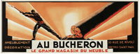 Bij Ethos komt het dus neer op het schermen met de kwaliteiten van de boodschap of het product dat je wilt verkopen. Hierbij is het vaak al voldoende om de betekenis van bepaalde belangen of waarden op emotionele wijze te benardukken. Het publiek legt dan zelf wel de gewenste verbinding met het standpunt dat ter discussie staat. Volgens Aristoteles is Ethos het sterkste overtuigingsmiddel.[18] In het voorbeeld van Cassandre is te zien hoe een houthakker zorgvuldig zijn werk doet, dit zegt wellicht iets over de kwaliteit van de meubels. Het gebruiken van bekendheden in reclamecampagnes kan ook typisch als vooreeld van ethos worden gezien, zoals bij de campagne van Chanel. De ‘geschikt, ongeschikt’ campagne van de landmacht is een voorbeeld.
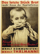 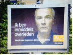
Pathos:
Wanneer er gebruik wordt gemaakt van Pathos, wordt er ingepseeld op de emoties van het publiek. Dit kan bijvoorbeeld in de vorm van een metafoor een eenvoudige claim zijn dat een kwestie onrechtvaardig is. Goede voorbeelden van pathos zijn wervingscampagnes waarop we zielige kinderen of stervende dieren te zien krijgen, waardoor we doneren. Als we dit verder doortrekken kunnen we ook campagnes die ons het gevoel geven ergens bij te horen onder pathos scharen. Hiernaast een voorbeeld van john Heartfield waarin hij zich verzet tegen oorlog in 1931. De poster pleit ervoor dat het laatste stuk brood moet aan de kinderen gegeven moet worden.
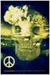 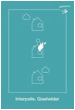 Logos
Logos beroept zich op een logische redenering. Bij logos worden de feiten beschreven die het onderwerp van de spreker ondersteunen. Omdat gegevens moeilijk te manipuleren zijn, vooral indien ze uit een betrouwbare bron komen, zou logos cynistisch publiek kunnen overtuigen. Waar pathos een beroep doet op het hart, doet logos een beroep op de ratio. Een voorbeeld van Logos is een reclamecampagne waarbij de feitellijke voordelen van een bepaalde verzekeringsmaatschappij op een rij worden gezet, of oorzaken en gevolgen van bepaalde keuzes worden zichtbaar gemaakt, zoals roken, of niet verzekerd zijn (interpolis). Hiernaast een vorbeeld van de designpolitie en een ontwerp van Henri Kay: ‘nuclear suicide’
4.3. Soorten argumentaties.
Er zijn volgens Neerlandicus Antoine Braet drie hoofdklassen van argumentaties, die tot uitdrukking komen in drie argumentatietypen, In elk argumentatietype bestaat er een andersoortige relatie tussen de argumentatie en het verdedigde standpunt doordat het aangevoerde argument via een andere route in verband wordt gebracht met het standpunt dan in beide andere argumentatietypen.
Argumentatie gebaseerd op een kentekenrelatie.
In een argumentatie die gebaseerd is op een kentekenrelatie wordt een standpunt verdedigd door in het argument een bepaald kenmerk, kenteken of symptoom te noemen van datgene dat in het stanpdunt beweerd wordt. Op dit automatsich samengaan moet het standpunt volgens de spreker of schrijver aanvaard worden. Een voorbeeld hiervan is: ‘Hero fruitsap is erg gezond, want er zit vers fruit in’ (en sap dat vers fruit bevat is gezond.)
Voor X (vers fruit) geldt Y (in Hero fruitsap)
Want: Voor X (vers fruit) geldt Z (is gezond)
En Z (gezond) is kenmerkend voor Y (Hero fruitsap)
Argumentatie gebaseerd op een vergelijkingsrelatie
In een argumentatie die gebaseerd is op een vergelijkingsrelatie wrodt een standpunt verdedigd door duidelijk te maken dat datgene dat in het standpunt beweerd wordt, overeenkomt met iets wat in de argumentatie geenoemd wordt en dat het standpunt op grond van deze vergelijkbaarheid aanvaard moet worden. Of een vrouw die een bepaald soort bodycreme gebruikt, hier wordt naar voren gebracht dat het ‘bij haar werkt dus bij jou ook’.
Voor X (als je nivea gebruikt) geldt Y (krijg je een mooiere huid)
Want: Voor Z (knappe mevrouw op tv die nivea gebruikt) geldt Y (heeft een mooie huid)
En Z (knappe vrouw op TV die nivea gebruikt) is vergelijkbaar met X (iemand die nivea gebruikt)
Argumentatie gebaseerd op een causale relatie
In een argumentatie die gebaseerd is op een causale relatie wordt een standpunt verdedigd door een oorzakelijk verband te leggen tussen het argument en het standpunt, dat het standpunt, gegeven het argument, op grond van dit verband aanvaard dient te worden’
Een voorbeeld hiervan is: ‘Pieter zal wel slechte deodorant gebruiken, want hij heeft geen vriendin’
Voor X (met slechte deodorant) geldt Y (heb je geen vriendin)
Want: Voor X (slechte deodorant) geldt Z (veroorzaakt stank)
En: Z (stank) leidt tot Y (het niet hebben van een vriendin)
4.4. Stijlfiguren.
Naast de indeling van retorische middelen in ethos, pathos en logos, bestaat er een uitgebreide verzameling stijlfiguren of retorische vormen die in de retorica voorkomen. Aristoteles en Quintilianus beschreven al talloze stijlfiguren en hun functies zoals metafoor, hyperbool, ironie, rijm en alliteratie. Stijlfiguren kunnen op verschillende manieren werken. De schema’s die werken via herhaling zijn bijvoorbeeld rijm en alliteratie. Vrijwel alle stijlfiguren zijn gebaseerd op met een zekere vorm van regelmatigheid of onregelmatigheid. Hieronder een aantal voorbeelden [19] die visueel kunnen worden toegepast.
Visuele rijm:
Rijm hoeft niet altijd te gaan over klankgelijkheid in woorden, maar kan ook visueel worden toegepast, in dit geval hebben we het over beeldrijm. Bij beeldrijm wordt een bepaalde vorm herhaald, en ‘rijmt’ dus met de vorm die daarvoor waar te nemen was. Een voorbeeld hiervan is de Gibson-reclame rechts. Een ander voorbeeld is een unox-reclame met een besneeuwde ijsbaan in de vorm van een rookworst. De perspectieven zijn zo gekozen dat het beeldrijm maximaal is.
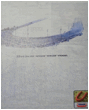

Verbo-picturaal schema
Bij een Verbo-picturaal schema wordt de tekst door een beeld aangevuld. Een voorbeeld hiervan is een ontwerp van Wladimir Bielkine: Metz & Co, de vormen van de man met mijter zijn tegelijkertijd letters.. In het ontwerp van Cornelius van Velsen uit 1955 voor Philips, vormt het lichaam van de saxofonist de Z. Tot slot nog een voorbeeld van Fang Chen uit 1998, waarbij de vingers de V van ‘Victim vormen.
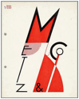 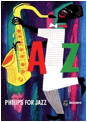 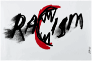 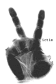
Repetitio
herhaling van een beeld of boodschap zorgt dat die beter onthouden wordt: het wordt de kijker ‘ingepeperd’. Het kan hier gaan om de herhaling van militairen of klappende handen, dit soort elementen dragen al snel een boodschap uit over vertrouwen in defensie. In de voorbeelden hiernaast is een ontwerp van Paul Schuitema te zien voor de Centrale Bond, in het lichaam van de man is een grote mensenmassa te zien, dit versterkt het idee van een grote hoeveelheid mensen. Een ander voorbeeld is ontworpen door Jan Bons, in het affiche voor het IDFA is de de herhaling van een filmcamera te zien. Tot slot een iets hedendaagser ontwerp van Andrew Lewis.
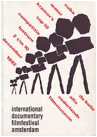
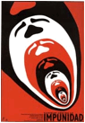

Contrast
Het visualiseren van tegenstellingen is voor ontwerpers een buitengewoon sterk middel om aandacht te trekken. Contrasten laten verschillen zien tussen gedachten, mensen of objecten, en kunnen zo bijdragen aan de overtuiging om een van de contrasterende kanten te kiezen. In het voorbeeld hiernaast is een affiche te zien van Wild Plakken over apartheid. In het beeld zijn twee gezichten te zien die samen een gezicht vormen, en toch een contrast laten zien tussen mensen. Een ander voorbeeld is een affiche van Buro RuSt, hier gebeurt iets dat men niet verwacht. Dat dieren vechten om een stuk vlees is nog wel aanneemelijk, maar dat een mens zich zo gedraagt roept vragen op, en intrigeert een beetje.
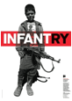 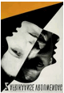 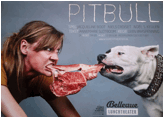
Metafoor
Visuele metaforen Verduidelijken een idee door een beschrijving van iets anders met gelijke karakteristieken. In de foto van Man Ray (Le violon d’Ingres, 1924) wordt het model Kiki vergeleken met een viool of cello door de ‘gaten’ uit een viool toe te voegen. Daarnaast is een advertentie van Clorets te zien over een slechte adem, die metaforisch wordt weergegeven door een vis of sok als tong. Ook zijn worden er vaak metaforen gebruikt bij vraagstukken rondom millieu Zoals in het affiche rechts van Mccan-erickson.
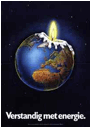 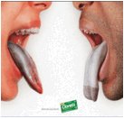 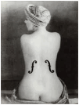
Synecdoche
Dit is het koepelbegrip van pars pro toto (waarbij een deel staat voor het geheel) en totum pro parte (waarbij het geheel staat voor een deel). Bij een verwijzing naar toiletten vertelt een mannelijk- vrouwelijk- of rolstoelfiguurtje dat alle mannen, vrouwen en rolstoel-gebruikers welkom zijn. Ook bij de symbooltjes van kijkwijzer is er gebruik gemaakt van Synecdoche. In het voorbeeld van Otto Neurath zijn er verschillende soorten mensen, een figuurtje staat voor een bepaalde groep mensen. In het geval van kijkwijzer staan de voeten voor het geheel.
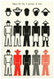

Vergelijking
Verschillende objecten worden vergeleken met elkaar om een statement te maken. Vergelijking kan bruikbaar zijn om verschillen te laten zien, of misschien juist overeenkomsten, zoals in de reclamecampagne van het merk Benneton, zie hiernaast. Ook een voorbeeld van Lex Drewinski over armoede. Soms gebeurt er in voorstellingen met contrast iets waarmee de kijker zich kan identificeren, en daardoor al snel overtuigd raakt van de boodschap die het beeld draagt.
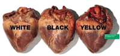

Personificatie
Bij personificatie worden objecten of dieren worden als personen voorgesteld, dit is een middel dat niet zelden in de reclame gebruikt wordt. Voorbeelden hiervan zien we vaak bij televisiereclames, zoals de reclames van simpel. Een ander voorbeeld is een beeld van Gorilla met als onderwerp obesitas. Het standpunt dat we in Nederland met z’n allen te dik zijn wordt verduidelijkt door Nederland als land te dik voor te stellen.
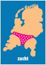 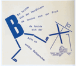
Hyperbool
De hyperbool is het stijlfiguur van de sterke overdrijving, soms in de vorm van beeldspraak of clichés. D.m.v. een hyperbool kan men iets beweren door ontkenning doen van het tegenovergestelde. Het effect is dat de bewering bijzondere nadruk krijgt. Een voorbeeld hiervan is ‘the axe effect’ in een mannendeodorantreclame. Ook het historische ontwerp van de PSP uit 1971 zouden we onder het kopje hyperbool kunnen scharen.
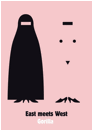 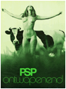 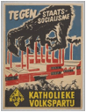
Oxymoron
Bij een Oxymoron worden twee zaken die elkaar tegenspreken tegelijkertijd gebruikt. Dit lijkt een beetje op een schijnbare tegenstelling (Paradox). Bijvoorbeeld georganiseerde chaos kan een oxymoron zijn. In het voorbeeld rechts van Luba Lakova is een duif te zien die bestaat uit wapens, raketten en oorlog-gerelateerde objecten. Omdat duiven symbool staan voor vrede is dit tegenstrijdig. Ook op straat kom je wel eens een oxymoron tegen, bijvoorbeeld in het verkeer.
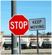 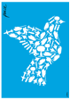
Pastiche
Pastische is nabootsing van het werk van een bekende auteur. Vooral in de kunst is Pastische erg populair, in de ontwerpwerld ben ik het nog niet heel vaak tegengekomen. Pastische ontleent zijn kracht aan het plezier van de herkenning, van het oplossen van het puzzeltje en het vinden van betekenisvolle verschillen. Men herkent het beeld onmiddellijk. In het voorbeeld rechts doen legomannetjes de Beatles na. Ook het ontwerp van James Montgomery Flagg uit 1917 wordt vaak gebruikt, zoals bij het voorbeeld hiernaast, van ‘Committee to help unsell the war.’
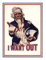 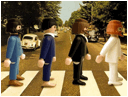
4.5. De grafisch ontwerper als visueel redenaar.
Van een visuele retorica kunnen we spreken als de basispropositie van een argument (bijvoorbeeld ‘Product X heeft positief kenmerk Y’) op een kunstzinnig afwijkende manier vormgegeven wordt. De effectiviteit van visuele retorica kan worden ontleend aan het speciale, positieve gevoel dat het verwerken en begrijpen van een ontwerp oproept. (‘Hé ik heb de visuele grap begrepen!’) Kijkers die worden geconfronteerd met beelden die een boodschap dragen, zullen streven naar interpretatie en daar naar hun gevoel in slagen, wat een positief gevoel oplevert. Dit zorgt ervoor dat het publiek een boodschap zal onthouden.
Om tot goede visuele retorica te komen is het noodzakelijk om het te verdedigen standpunt eerst te analyseren, vaak kom je dan tot de conclusie dat de kracht van de ene opvatting de zwakte is van de andere opvatting en vice versa. Met het contrast tussen verschillende opvattingen kan geexperimenteerd worden. In de meeste gevallen wordt er tegenstrijdige informatie weggelaten voordat het uiteindellijke ontwerp ontstaat. Wanneer dit ontwerp aan iemand wordt voorgelegd, zal er slechts een kant van het verhaal belicht zijn. Wanneer ontwerpers op een retorische wijze te werk gaan, kunnen ze dus bijna niet objectief zijn.
Het gebruik van Ethos, Pathos en logos .
Als het gebruiken van stijlfiguren in een ontwerp niet toereikend is, kan er ingespeeld worden op de gevoelens van het publiek. De klassieke retorica leert ons dat er drie benaderingen zijn om in te spelen op gevoelens, namelijk ten eerste door bepaalde belangen te benadrukken, of de kwaliteiten van een bepaalde opvatting of product te laten zien. (ethos) Bij de tweede manier wordt er ingespeeld op de emoties van een publiek, door te confronteren met een (schokkende) realiteit. (pathos) De derde manier is gebaseerd op een logische redenering. (Logos). Bij het gebruik van Ethos, pathos en logos is er niet altijd tekst nodig, soms is alleen een afbeelding bijna al voldoende.
Het gebruik van verschillende soorten argumentaties.
Als grafisch ontwerper kan je argumentaties op drie verschillende relaties: op een kentekenrelatie, op een vergelijkingsrelatie of op een causale relatie. Welke het best van toepassing is, hangt af van wat er gecommuniceerd moet worden. Bij deze drie manieren van argumenteren komen altijd narratieve aspecten kijken, een argumentatie bestaat namelijk altijd uit verschillende aannames (proposities). Al deze aannames moeten door middel van visuele middelen gecommuniceerd worden, dat lukt niet altijd. Soms is er tekst nodig om een bepaald publiek een bepaalde route in de argumentatie te laten volgen. Het gebruik van Ethos of pathos lijkt daardoor minder uitdagend voor ontwerpers dan complexe argumentaties waarbij een route in het denken gevolgd moet worden.
Het toepassen van kennis over stijlfiguren en andere retorische middelen.
Stijlfiguren zijn niet alleen op tekstueel gebied toe te passen, maar kunnen ook de overtuigingskracht van een visueel middel bevorderen. Verschillende ontwerpers en kunstenaars hebben hier in het verleden mee geexperimenteerd. In het werk van de Belgische kunstenaar én reclame - ontwerper René Magritte komt de beeldtaal van stijlfiguren bijvoorbeeld zeer goed naar voren. Moderne kijkers zijn zich bewust van deze visuele goochelkunst; soms is de manipulatie met het oog op een humoristisch effect zelfs expliciet. Om de kijker te verzekeren dat de beelden overeenstemmen met de realiteit zoekt reclame transformaties die meer overtuigingskracht hebben. Vaak speelt de fotografie hier een rol in, d.m.v. fotgrafie en fotomanipulatie kunnen er namelijk dingen gevisualisseerd worden, die helemaal niet mogelijk zijn in de realiteit, anders dan bij een illustratie, in illusraties is alles mogelijk. De kracht van een gemanipuleerd fotografisch beeld zou daarom een sterker effect op mensen kunnen hebben dan een vervreemding in een illustratief beeld.
De samenstelling van een compositie kan ook gezien worden als retorisch middel. Hierbij is het belangrijk allereerst de aandacht te trekken van het publiek. De compositie kan hierbij bruikbaar zijn om in te spelen op datgene dat het publiek interesseert of emotioneert. Aandacht kan ook getrokken door dingen te doen die mensen niet verwachten. Door de boodschap net groter, scherper, of contrasterender neer te zetten dan je in een natuurlijke omgeving zou verwachten. De kunst is om deze overdrijvingen precies af te stemmen op het effect dat je beoogt, zodat je mensen niet doet denken gemanipuleerd te worden. Een overdrijving kan juist ook zo groot zijn dat het effect ironisch wordt. De grens tussen een serieus ontwerp en een ironisch ontwerp is overigens cultureel bepaald, zo zien we dat beelden die Amerikaanse ontwerpers soms retorischer te werk gaan met middelen als overdrijving dan we hier in Europa gewend zijn.
5. reflectie: vraagstukken m.b.t. verantwoordelijkheid en objectiviteit.
5.1 Inleiding.
Het beeld is in de hedendaagse samenleving een taal geworden, toegankelijk voor iedereen. Communiceren gaat wellicht steeds minder via de taal en de woorden van het alfabet. Beelden worden steeds krachtiger, want ze hebben vaak geen uitleg nodig. De beelden zijn hapklaar, spreken letterlijk en figuurlijk voor zichzelf. Een mogelijk gevolg hiervan is dat mensen wellicht minder zelf nadenken. Men lijkt dan ook al snel een mening te hebben over diverse kwesties, vaak is dit gebaseerd op wat er speelt in de media, overtuigingen, meningen worden vaak kriitiekloos ondergaan, overgenomen. Soms zetten deze overtuigingen aan tot actief gedrag, maar vaak ook tot passief gedrag. Bijvoorbeeld oorlogsbeelden worden heel gewoon, roepen nergens meer toe op. De overvloed aan informatie en de (quasi-) duidelijkheid suggereren dat we er toch allemaal niets meer aan kunnen doen. Dit soort gevolgen van de groeiende rol van de media zijn moeilijk in te schatten.
Zijn grafisch ontwerpers scheppers van nieuwe waarden en van het steeds verder opschuiven van normen? of sluit het werk dat ontwerpers leveren aan op wat de mensen altijd al dachten en meenden? De rol van media, grafisch ontwerp en kunst in de moraal kan worden verduidelijkt door te verwijzen naar klassieke beschouwingen over de rol van kunst in de samenleving. In het verleden stond kunst vaak centraal in het ontstaan van vernieuwde opvattingen en verlichtende denkbeelden. Het is zeer aannemelijk dat de invloed van mediamakers en ontwerpers in deze tijd minstens zo groot is. Kunnen ontwerpers en makers van media de consequenties van hun werk wel altijd overzien?
Deze vragen roepen nog meer vragen op: Hoe gaan we daar als ontwerpers ethisch mee om, willen we daar wel ethisch mee omgaan? Ontwerpers zijn dan niet verantwoordelijk voor de daden van ontvangers van hun communicatie, maar als ontwerper kan je jezelf wel afvragen wat je met je beelden en visuele talen oproept of op kan roepen. Is het in ons vak nog wel mogelijk om objectief en betrouwbaar te zijn?
5.2 Eigen visie: Objectiviteit versus subjectiviteit in visuele communicatie.
Het objectief waarnemen van een visuele boodschap.
Communicatie is een dynamisch proces dat zich steeds aanpast aan de steeds wijzigende behoeften van ontvangers en boodschappers. Maar hoe deze invloed ook plaatsvindt, het staat vast dat media invloed uitoefenen op opvattingen en wellicht ook op gedragingen van mensen.
De grootte van media-invloed op mensen is, hangt niet alleen af van hoe sterk het werk van grafisch ontwerpers is, maar ook de attitude van het publiek t.o.v. de gecommuniceerde boodschap moet een rol spelen. Een attitude t.o.v. een visuele boodschap wordt gevormd op individueel niveau en door interactie met anderen, een samenleving codeert zichzelf min of meer.
Op individueel niveau is de perceptie van binnenkomende informatie afhankelijk van de voorkennis en associaties van een persoon, dit is gebaseerd op alle ervaringen die in het individuele bestaan zijn opgeslagen in het geheugen.
Daarnaast wordt deze attitude ook gevormd door normen die binnen een bepaald collectief bestaan. Door de eigen kennis te spiegelen aan de kennis van anderen, wordt de kennis niet alleen verrijkt, maar wordt deze ook nog subjectiever. Een binnen een groep gedeelde opvatting binnen de perceptie, kan dan als objectieve waarheid worden ervaren. Wanneer bepaalde kennis als waarheid wordt ervaren binnen een gemeenschap, hangt af van de normen, waarden en inzichten binnen deze gemeenschap.. Het is dus mogelijk dat kennis die buiten deze gemeenschap valt, niet als waarheid wordt opgevat.
De perceptie van een (visuele) boodschap wordt dus sterk beïnvloed door de individuele attitude t.o.v. het onderwerp waar de boodchap over gaat, en de heersende opvattingen in het collectief waar het individu deel van uit maakt. Een groot deel van deze invloed lijkt binnen het bewustzijn plaats te vinden. Maar deze beïnvloeding vindt echter ook onbewust plaats. Het is dus zeer aannemelijk dat het objectief verwerken van binnenkomende informatie niet mogelijk is.
Het objectief verzenden van een visuele boodschap.
Als we kijken naar de geschiedenis, is (grafisch) ontwerp en kunst altijd een afspiegeling geweest van verschillende sociale en maatschappelijke denkbeelden. Het heeft zichzelf ook vaak het vermogen toegekend deze denkbeelden te kunnen beinvloeden en vormen. Ik denk dat door iets te representeren je inderdaad per definitie er ook iets aan verandert.
Meningsvorming ontstaat in de huiskamer, op de werkplek en in de kroeg. Media versterken deze reeds bestaande opvattingen. Het lijkt dus zo te zijn dat media ‘bepalen’ waarover de publieke discussie gaat. Als grafisch ontwerper speel je hier ook een actieve rol in, en draag je dus ook een verantwoordelijkheid. Dat besef kan ingezet worden. In dat geval ben je niet een vormgever van de informatie van anderen, maar dan is die informatie gecombineerd met een eigen visie, een onderdeel van de ‘communicatie’ waar je als ontwerper de regie over voert- of kunt voeren.. Voor ontwerpers vormt het wel- of niet gebruik maken van een eigen visie in het ontwerpwerk een belangrijk vraagstuk.
Eerst zal ik mij nog kort buigen over de vraag of het objectief doorgeven of verzenden van informatie door grafisch ontwerpers uberhaupt mogelijk is. Zelf denk ik van niet. Ten eerste ben je al subjectief bezig wanneer je een keuze dient te maken tussen potentiële klanten. Ten tweede is het vaak noodzakelijk je te verdiepen in wat de klant wil, om je creatieve proces een beetje te laten sturen. Die sturing kan ook bijna niet objectief zijn, en neemt een stukje objectiviteit weg. Jouw klant heeft een beoogd doel, en zal waarschijnlijk op een subjectieve manier moeten handelen om dat doel te bereiken, daar kan je als ontwerper niet omheen. Ten derde lijkt het in veel gevallen noodzakelijk om bepaalde informatie wel- en andere informatie van klanten niet aan het publiek te laten zien, om zo het denken van het publiek de juiste kant op te sturen.
Het is met deze tegenargumenten moeilijk te blijven beweren dat ontwerpers aanspraak kunnen maken op de status van neutraliteit, rationaliteit of objectiviteit. Ik denk dus dat de neutraliteit in het communiceren van een boodschap d.m.v. grafisch ontwerp een mythe is.
5.3 Is het wenselijk om als ontwerper te streven naar een status van objectiviteit of neutraliteit?
09.11.72: Het debat
Op 9 November 1972 vond er een historisch debat plaats[20], waarin de vraag werd gesteld of grafisch ontwerpen een objectieve- of juist een subjectieve bezigheid is. In het bijzijn van enkele honderden kritische toeschouwers, onder wie veel ontwerpers en academiestudenten werd dit vraagstuk behandeld door Wim Crouwel en Jan van Toorn in Museum Fodor, een deel van het stedelijk museum in Amsterdam.
Het standpunt van Wim Crouwel was dat de ontwerper zich niet inhoudellijk moet bemoeien met de informatie die hij overbrengt, maar dat hij slechts een middelen levert waarmee deze informatie op een objectieve manier bij het juiste publiek afgeleverd kan worden. Hiervoor is volgens Crouwel grafisch ontwerp als ordeningsproces toepasbaar, elke vormgeving die meer wil zijn dan dat is volgens Crouwel overbodig. Crouwel vond dat een ontwerper een ontwerper nooit met een eigen visie m.b.t. concept of vormgeving tussen de over te brengen boodschap en de ontvanger moet gaan staan. Gevoelsmatig en intuitief ontwerpen was voor hem uit den boze.
Jan van Toorn was, in tegenstelling tot de zakelijke en analytische Crouwel, een emotionele, maatschappijkritische ontwerper. Hij was, in tegenstelling tot Crouwel, ervan overtuigd van het feit dat het voor een grafisch ontwerper noodzakelijk is om subjectief te zijn om de informatie op de juiste wijze door te geven aan een bepaad publiek. Het is daarbij voor ontwerpers belangrijk om zich te verdiepen in deze informatie, en deze te vertalen tot een communicerend ontwerp. Van Toorn is bereid uitgebreid te experimenteren met deze informatie terwille van betere resultaten.
Crouwel vindt dat Van Toorn de neiging heeft om zich door de grote verantwoordelijkheid t.a.v. de maatschappij zo te verdiepen in de opdracht waarvoor hij ontwerpt, dat hij zich gaat begeven op terreinen die niet de zijne zijn. Volgens Crouwel is het gevaar daarvan dat dit uitdraait op een amateuristische bijdrage aan het werk van de klant.
Een tegenargument zou volgens mij kunnen zijn dat soms zelfs noodzakelijk lijkt om je af en toe te begeven op terreinen die eigenlijk niet de jouwe zijn, om tot een goed ontwerp te komen. Van Toorn formuleerde zijn eigen tegenargument als volgt: ‘De grafisch ontwerper heeft een dubbelrol als overbrenger van informatie: zijn taak is enerszijds overdracht van inhoud, zonder daar in te grijpen, anderszijds heeft hij wel degelijk een niet te ontlopen inbreng.’
Volgens Crouwel is maatschappelijk engagement echter voor ontwerpers maar op een manier te belijden: door selectief te zijn in de keuze van een opdrachtgever. Wanneer een ontwerper selectief wordt in de keuze voor opdrachgevers, brengt dit ook consequenties met zich mee.. Crouwel brengt dit naar voren met het volgende argument: ‘ subjectief ontwerpen betekent in z’n uiterste consequentie dat je alleen maar vormgeeft aan dat waar je helemaal achter staat, dat maakt de kans groot dat je maar een heel klein werkterrein hebt’.
Van Toorn vindt dat de subjectiviteit niet zozeer zit in de keuze voor een bepaalde opdrachtgever, maar eerder in het streven naar écht informeren en communiceren. Volgens Van Toorn is het een slechte zaak dat grafisch ontwerpen door digitale ontwikkelingen steeds meer toegespitst op rationalisatie, conditionering en programmering, de focus zou daardoor minder liggen op het informeren en commucieren. Volgens van Toorn is er voor goede communicatie een sterke identiteit in een grafische uiting noodzakelijk. Hij zei hierover het volgende: ‘Crouwels angst voor subjectief ingrijpen leidt tot eenvormigheid, wardoor een sterke identiteit verloren gaat’. Crouwel ontkende inderdaad het bestaan van identiteit in zijn eigen werk als een stijl die tussen de opdracht en het publiek in stond.
Crouwel benadrukt als reactie hierop de noodzaak van consistentie in grafisch ontwerp. Crouwel: ‘Soms ben je als ontwerper genoodzaakt om consequent te blijven, ook als je weet dat iets mooier zou kunnen als je niet consequent zou zijn geweest’
Van Toorn verdedigde zijn eigen standpunt met: ‘Bij jou zijn foto’s en tekstkolommen grijsvlakken. Jij geeft alleen vorm aan het instituut. Ik vind, wij vinden met elkaar, dat het instituut niet belangrijk is. Het contact tot stand brengen met het publiek van het instituut, dat is belangrijk!’
Op 2 november 2008 gingen Crouwel en Van Toorn opnieuw in debat voor een klein publiek. Dit keer was het niet meer zo intens als in ’72, dit had temaken met het feit dat Crouwel minder standvastigheid vertoonde in het pleiten voor objectiviteit binnen het ontwerpvak. Hij leek door de jaren heen gemerkt te hebben dat het streven naar objectiviteit toch minder toepasbaar was in ontwerpwerk dan hij in ’72 dacht. De twee ontwerpers zijn dus in zekere zin nader tot elkaar gekomen. Toch zal deze discussie tussen Crouwel en van Toorn nooit volledig beslecht worden.
5.4 Conclusies/slot.
Grafisch ontwerpen wordt gezien als een specialisme van vorm en esthetiek, of als een tencnologische discipline. Maar grafisch ontwerpers hebben met meer te maken dan technologie en esthetiek, grafisch ontwerpers hebben te maken met opdrachtverhoudingen, en bepepaalde doelen dat ontwerpwerk dient, de functie die het moet vervullen. Er is een heel scala aan hulpwetenschappen nodig om het ontwerpproces en de context van het ontwerp te kunnen begrijpen. Hierbij kunnen we denken aan psychologie, semiotiek, en retorica, maar ook aan sociologie, communicatiewetenschappen, boekgeschiedenis, kunstgeschiedenis, architectuur enz. Er valt voor ontwerpers dus nog erg veel waardevolle kennis te halen binnen verschillende vakgebieden. Door me in deze schriptie te beperken tot psychologie, semiotiek en retorica ben ik er zelf redelijk in geslaagd om antwoorden te vinden op vragen met betrekking tot de status van neutraliteit waar grafisch ontwerpers soms een beroep op doen. Ook heb ik door dit onderzoek een eigen visie kunnen ontwikkelen.
Eigen visie m.b.t. objectiviteit.
Wanneer er wordt getracht objectief te zijn, beperkt men uiteindelijk het vermogen van het ontwerp om het eigen voorstellingsvermogen van de kijker te raken, hem of haar te bevrijden van voorgeschreven reacties. Om deze reden kies ik zelf de kant van Van Toorn, en ben van mening dat de subjectieve aanpak van een een grafisch ontwerper een waardevolle bijdrage kan leveren aan de communicatie van een boodschap. Voor ontwerpers is soms een zekere mate van vervreemding een voorwaarde voor een werkwijze die leidt naar zinvol ontwerp. Vervreemding is het creeeren van afstand, wat betekent dat men zelf de afstand bepaalt ten opzichte van de door de maatschappij gehanteerde waarden en normen. Dit is alleen mogelijk als er wordt afgeweken van gangbare, ‘objectieve’ denkpatronen. Daarvoor heb je toch echt subjectiviteit nodig.
Het bestaan van engagement binnen grafisch ontwerp.
Na mijn onderzoek over de strijd om de publieke opinie, vraag ik mij af wat het begrip engagement betekent voor de huidige generatie ontwerpers. Soms lijkt er in het hedendaags ontwerpwerk iets fundamenteels te ontbreken, iets om voor te strijden. Soms weet ik niet zoe goed waarvoor je zou moeten trijden, want we hebben alles al in de welvaartsstaat. Grote idealen ontbreken tegenwoordig, en dat neemt schrikbarende vormen aan, want je bent wat je eet, wat je draagt, waarin je slaapt en waar je op zit. Dit soort kleine idealen treden steeds meer op de voorgrond. Ontwerpers lijken daardoor hun vak steeds vaker zonder doel te beoefenen, ook zonder dat er een conflict is tussen’vorm’ en ‘inhoud’. Ontwerpes kunnen namelijk heel goed inhoudelijk verantwoord en toch doelloos bezig zijn, dit komt omdat de inhoud in veel gevallen zo sterk niet meer is, als gevolg van een overschot aan inhoud in het straadbeeld van de welvaartsstaat.
Daarnaast vormen Ideële campagnes ook een veel grotere uitdaging voor ontwerpers. Bij het maken van ideel ontwerpwerk staan ontwerpers voor veel hetere vuren dan bij commercieel ontwerpwerk. Men koopt toch eerder een Twix in plaats van een Mars dan wanneer men drank of sigaretten terzijde schuift. Met ideële onderwerpen in ontwerpwerk raak je mensen in het diepste van hun wezen, en dan bevind je je al snel op glad ijs. Voor veel ontwerpers lijkt dit een te grote uitdaging.
Verantwoordelijkheid t.o.v. communicatie van de waarheid.
Als ontweprer ben je verantwoordelijk voor de visualisatie van een boodschap of gedachtegoed van jezelf of anderen. Dit kan een commerciele boodschap zijn ter bevordering van de verkop van een bepaald product, maar kan ook een ideële boodschap zijn die tot doel heeft gedragsverandering bij een bepaalde groep mensen tot stand te brengen Dit laatste is een stuk lastiger, maar niet onmogelijk.
De overtuigingskracht van ontwerpwerk kan groot zijn, groter dan we zelf denken. Beelden vertellen namelijk hun eigen verhalen, en vaak op een indringer manier dan woorden. De tijd van het beeld als plaatje bij het praatje ligt al lang achter ons. Visuele composities vormen vaak geen toevallige samenhang van beeldelementen meer, maar zijn het resultaat van een ingewikkeld proces, en daar houdt het publiek tegenwoordig ook rekening mee. Visueel geletterde burgers in Nederland verwachten dan ook vaak een achterliggende boodschap, misschien ook zelfs wanneer deze niet aanwezig is. Naar mijn mening moeten ontwerpers daarom serieus rekening houden met de impact die hun werk kan hebben. Ook wanneer de werkelijkheid anders is, kan ontwerpwerk haar eigen verhaal gaan vertellen, zonder dat de ontwerper die bedoelingen had. Die verhalen zijn hardnekkig, en nauwelijks te corrigeren. De studie naar het perceptieproces van visuele communicatie zoals het werk van grafisch ontwerpers, en de subjectiviteit van het medium en ontvanger vormen daarom samen het onderwerp waarop ik wil afstuderen.
Opgedane kennis uit deze scriptie.
Waar men meent dat het werk van een grafisch ontwerper op een subjectieve of juist objectieve manier zijn werk doet, bevinden we ons al snel in het terrein van perceptie van de mensen die het ontwerpwerk zullen gaan waarnemen, van de reeds in omloop zijnde tekens en betekenissen, van de informatie, de taal van het al bekende en de ermee samengaande waardeoordelen. Vandaar dat ik koos voor dit onderwerp. Ik ben er van overtuigd dat de kennis die ik heb opgedaan in dit onderzoek bijdraagt aan de manier waarop ik contact maak met mijn publiek. Ik heb geleerd dat objectiviteit in de wereld van een grafisch ontwerper niet echt mogelijk, en misschien in veel gevallen ook ongewenst is.
Er bestaat (met uitzondering van typografische wetmatigheden) geen handleiding voor het maken van kwalitatief grafisch ontwerp en misschien is dat maar goed ook, want wanneer dit wel het geval was, zou niemand onbekende paden verkennen, waardoor er geen vernieuwingen mogelijk zouden zijn. Er lijken geen vaststaande rationele maatstaven te bestaan om de kwaliteit of waarde van grafisch ontwerp kunnen beoordelen. Dat een ontwerper over de kennis van ontwerpsoftware beschikt, of gevoel heeft voor vorm, maakt hem of haar nog geen goede ontwerper. Wat iemand tot een goede ontwerper maakt, is iets ongrijpbaars, gevoelsmatigs, precies datgene dat ik gedurende mijn studietijd steeds meer geleerd heb.
Notities Nog aan werken:
§ Betere visuele voorbeelden zoeken + toelichten voorbeelden!!
§ Literatuurlijst:
o Op alfabetische volgorde
o Tussenkopjes weg
o Heb ik echt alles gebruikt?
§ Lezen: Ways of seeing – John Berger 1972
§ Relatie met het afstudeerproject
§ Medelezer zoeken.
§ Een manier vinden om te verwijzen naar beelden.
§ Consequent zijn met woorden
o Ontwerpwerk, het werk van een ontwerper, grafisch ontwerp.
§ Conclusies aanvullen of samenvoegen met voorlaatste deel.
§ Beeldverantwoording + beter beeldmateriaal zoeken.
§ Document vormgeven.
o Illustraties maken.
§ 7000 woorden: inkorten <- Vragen Marjan: hoe strikt is dit?) SCHRAPPEN SCHRAPPEN SCHRAPPEN.
o Inkorten: stijlfiguren. (wellicht minder voorbeelden geven. = Algemene kennis
o Inkorten: tekens volgens peirce. = Algemene kennis
o Inkorten: ethos, pathos en logos = Algemene kennis
§ Langere abstract.
literatuurlijst
Psychologie-gerelateerde boeken.
Gray, Peter (2007) Psychology, fifth edition, New York, worth publishers.
Johnson, A, W. Proctor, R (2004) Attention, theory and practice. Sage publications, california.
Chiu, L (1972) A cross-cultural comparison of cognitive styles in Chinese and American children. International Journal of Psychology.
Helmholtz, H. von. (1881). Popular Lectures. London: Longmans Green. Dover reprint, 1962.
Helmholtz, H (1896) Handbuch der physiologischen Optik, Leipzig: Leopold Voss. Second revised edition of 1896.
Festinger, L. (Ed.). (1964). Conflict, decision, and dissonance (Vol. 3). Stanford University Press.
Selfridge, O.G.; (1955) Pattern Recognition and Modern Computers, American Federation of Information Processing Societies.
Sedda, A ; Ferrè, E R ; Striemer, C L ; Bottini, G (2013) Neglect's perspective on the Ponzo illusion, Bethesda, U.S. National Library of Medicine.
Weidner, R ; Boers, F ; Mathiak, K ; Dammers, J ; Fink, G. R (2010) The Temporal Dynamics of the Müller-Lyer Illusion Oxford, Oxford: University Press
Gregory, Richard. L. (1997) Mirrors in mind. Oxford: W. H. Freeman.
Freud, Sigmund (1918), Inleiding tot de psychoanalyse. Amsterdam, Uitgeverij Wereldbibliotheek.
Kahneman, Daniel, (2011) Ons feilbare denken, Amsterdam, uitgeverij Business contact.
Dijksterhuis, Ap (2012) Het slimme onbewuste, denken met gevoel, Amsterdam, Uitgeverij Prometheus
Gregory, Richard L. (1998) Eye and Brain: The Psychology of Seeing, Princeton University Press
Vernon, M.D. (1966) De psychologie van het zien. Het Spectrum Utrecht / Antwerpen
Dember, William N., Warn, Joel S (1981) Psychology of perception, second edition. Holt, Rinehart and Winston, New York.
Bruce, V., Green, P. & Georgeson, M. (2003). Visual perception: physiology, psychology and ecolo gy . Hove [etc.]: Psychology Press.
Boeken over Semiotiek
Neurath, O. (1998) International picture language. University of Reading, Reading & Language Information Centre
Hoopes, James (1991) Perice on Signs, Chapel Hill: The University of North Carolina Press.
Barthes, R. (1967), Elements of Semiology, New York: Hill and Wang.
Sebeok, T.A., (1994) An introduction into semiotics. Toronto. University of Toronto press
Greenlee, D. (1973) Peirce’s concept of sign. The Hague.
Kress, G. Van Leeuwen, (2006) T. Reading images. The grammar of visual design. London.
Rose, Gillan (2012) Visual methodologies, an introduction to researching with visual materials. Sage publications, London.
Literatuur over Retorica en overtuigen.
Cialdini R., (2007) Influence, the psychology of persuasion, New York: Harper Collins.
Marshall, McLuchan (2008) The Medium Is The Massage An Inventory Of Effects, Penguin Books Ltd, USA.
Aristoteles, (2004) Retorica; vertaling. Historische Uitgeverij, Groningen
Braet, A., (2007) Retorische kritiek; Overtuigingskracht van Cicero t ot Balkenende. Sdu Uitgevers, Den Haag.
Boekraad, H.C., Reijnen, L., van der Waarde, K. (2007) Reader visuele retorica. Breda, Sint Joost.
H.W.A. van Rooijen-Dijkman en A.D. Leeman, (2006) Cicero: De ideale redenaar. Atheneum, Amsterdam.
Castells, M. (2009). Communication Power. Oxford: Oxford University Press.
Lakoff, G, Johnson, M (1999) Leven in metaforen. Nijmegen, Uitgeverij SUN.
Boeken over moraal en objectiviteit.
John Crammer and Yolanda Zappaterra.(2003) Conscientious Objectives: Designing for an Ethical Message. RotoVision, Zwitserland.
Huygen, F, Van de Vrie, D (2009) Het Debat: Crouwel & Van Toorn, zoo producties, Eindhoven.
Hyde, Lewis (1983) The Gift, how the creative spirit transforms the world. Random House, Edinburg.
Vakliteratuur.
W. Purvis, Alston, Meggs, Philip B. (2006) Meggs' History Of Graphic Design, John Wiley & Sons Inc, New Jersey.
W. Purvis, Alston, Le Coultre, Martijn F. (2003) Graphic design 20th century. BIS publishers, Amsterdam.
Hollis, Richard. (2005) Graphic design: a concise history. Thames & Hudson Ltd, London
Scruton, R. (2008) Waarom cultuur belangrijk is, Nieuw Amsterdam. (Maarten Cornel)
Woordenboeken:
De Vries, J, De Tollenaere, F. (1958) Prisma etymologisch woordenboek, Uitgeverij Unieboek, Houten.
Tijdschriften:
Kanizsa, G. (1955). ‘Quasi-perceptional margins in homogenously stimulated fields.’ Rivista di Psicologia, 49, p. 7-30.
Wertheimer, M. (1923). ‘Untersuchungen zur Lehre von der Gestalt II.’ Psychologische Forschung, 4, 301-350
Schilperoord, J. & Enschot, R. van (2006). Boekbeoordelingen - Retoriek in reclame. Tijdschrift voor Taalbeheersing , 28 (3) , 265-270.
Schilperoord, J. & Maes, A. (2003). Overtuigen met visuele en verbale retoriek. Tijdschrift voor Taalbeheersing , 25 (2) , 119-141
Websites:
www.http://catalogue.leidenuniv.nl/primo_library (login met mijn ULCN account)
[1] Van Dale Etymologisch woordenboek.
[2] Gray, Peter (2007) Psychology, fifth edition, New York, worth publishers.
[3] Chiu, L (1972) ‘A cross-cultural comparison of cognitive styles in Chinese and American children.’ International Journal of Psychology, p.235-242.
[4] Helmholtz, H (1896) Handbuch der physiologischen Optik, Leipzig: Leopold Voss. Second revised edition of 1896.
[5] Festinger, L. (1964). Conflict, decision, and dissonance, Stanford: Stanford university Press.
[6] Selfridge, O.G. (1955) Pattern Recognition and Modern Computers, Los Angeles, California, American Federation of Information Processing Societies.
[7] Sedda, A ; Ferrè, E R ; Striemer, C L ; Bottini, G (2013) Neglect's perspective on the Ponzo illusion, Bethesda, U.S. National Library of Medicine.
[8] Weidner, R ; Boers, F ; Mathiak, K ; Dammers, J ; Fink, G. R (2010) The Temporal Dynamics of the Müller-Lyer Illusion Oxford, Oxford: University Press
[9] Brislin R. W. (1974) ‘Cultural diffrences in the perception of a three-dimensional Ponzo Illusion.’ Journal of Cross-Cultural Psychology, 397-412.
[10] Gregory, Richard. L. (1997) Mirrors in mind. Oxford: W. H. Freeman.
[11] Kanizsa, G. (1955). ‘Quasi-perceptional margins in homogenously stimulated fields.’ Rivista di Psicologia, 49, p. 7-30.
[12] Wertheimer, M. (1923). ‘Untersuchungen zur Lehre von der Gestalt II.’ Psychologische Forschung, 4, 301-350
[13] Freud, Sigmund (1918), Inleiding tot de psychoanalyse. Amsterdam, Uitgeverij Wereldbibliotheek.
[14] Kahneman, Daniel, (2011) Ons feilbare denken, Amsterdam, uitgeverij Business contact.
[15] Dijksterhuis, Ap (2012) Het slimme onbewuste, denken met gevoel, Amsterdam, Uitgeverij Prometheus
[16] Hoopes, James (1991) Perice on Signs, Chapel Hill: The University of North Carolina Press.
[17] Barthes, R. (1967), Elements of Semiology, New York: Hill and Wang.
[18] Aristoteles, (2004) Retorica; vertaling. Historische Uitgeverij, Groningen.
[19] Braet, A., (2007) Retorische kritiek; Overtuigingskracht van Cicero t ot Balkenende. Sdu Uitgevers, Den Haag. Blz 103: lijst met stijlfiguren.
[20] Huygen, F, Van de Vrie, D (2009) Het Debat: Crouwel & Van Toorn, zoo producties, Eindhoven.